Mathematics for camera systems
Linear algebra, geometry, rotations, calculus, probability, optimization, signals and numerics; distributions, information theory, validation statistics, Lie groups, automatic differentiation and solvers in practice
1The map
A camera-based driver assistance feature is a long chain of transformations. Light becomes electrons, electrons become numbers, numbers become an image, the image becomes geometry, geometry becomes objects, and objects become a decision. Every arrow in that chain is a piece of mathematics.
When people say "computer vision is maths-heavy" they usually mean deep learning. In a production automotive system the network is only one box. Around it sits classical mathematics that must be correct, fast, deterministic and explainable to an assessor: the noise model behind the ISP tuning, the lens model that undistorts a 190° fisheye, the calibration that says where the camera sits on the car, the filter that turns noisy detections into a stable track, and arithmetic that fits a strict embedded power budget.
Photons hit the pixel, become electrons, then digital numbers. HDR, LED flicker.
Black level, demosaic, white balance, colour matrix, denoise, tone mapping.
Intrinsics, distortion, extrinsics; EOL and online calibration.
Undistortion, IPM, bird's-eye view, surround view stitching.
CNN detection, segmentation, slots, lanes, keypoints.
Associate detections over time; fuse with odometry and other sensors.
Park assist, AEB, warnings; KPIs and safety arguments.
Pill colours: linear algebrageometrycalculusprobabilityoptimizationsignal processingnumerics
Seven toolkits, one product
Linear algebra is the language: images are matrices, points are vectors, poses are matrix products. Geometry uses it to describe how the 3D world is squashed onto a 2D sensor and how to undo that. Calculus measures change: edges, sensitivities, which way to nudge parameters. Probability admits that every measurement is wrong by some amount and gives rules for combining imperfect evidence. Optimization turns "find the best calibration" or "train the network" into an algorithm. Signal processing treats images as sampled waves and explains blur, aliasing, noise and flicker. Numerical computing is the reality check: computers have 32, 16 or 8 bits, not real numbers, and the gap between formula and implementation is where many field issues are born.
Chapters 14 to 19 extend the toolkit towards learning, estimation and validation: the distributions behind counts and waiting times, information theory (entropy, cross-entropy, KL divergence), the statistics of validation campaigns, rotations as Lie groups for optimisation, automatic differentiation, and how a real least-squares problem is set up in Ceres Solver and SciPy.
Five ideas that carry most of the load
Moving between frames, projecting, rotating, colour correcting: multiply by a matrix. Chains of transforms are chains of products.
A camera divides by distance. That one division causes most of the difficulty in monocular vision.
Real data is noisy and overdetermined. We minimise an error (least squares) instead of solving exactly.
An estimate without a covariance is half an answer. Kalman filters, gating and safety arguments all depend on it.
Precision, range and rounding are design decisions, not afterthoughts, especially on embedded targets.
How deep do you need to go?
Not every role needs the same depth. A useful rule: a developer must be able to implement and debug the topic, a lead must be able to review it, and a manager must be able to explain why it matters and recognise when an answer is weak. The table maps the chapters to those levels.
| Topic | Developer: implement and debug | Manager: explain and challenge |
|---|---|---|
| Linear algebra, SVD (Ch. 2– 4) | Pick the right factorisation, normalise data, read singular values | "Fit, don't solve"; why conditioning and observability matter |
| Geometry, rotations (Ch. 5– 6) | Frame chains, lens models, homographies, quaternion conventions | What calibration is, why flat-world IPM fails for tall objects |
| Calculus (Ch. 7) | Jacobians, linearisation, autodiff, numeric gradient checks | Sensitivity: which tolerance drives which error |
| Probability, statistics (Ch. 8) | Noise models, Kalman tuning, RANSAC budgets, metrics | Uncertainty, base rates, what test mileage can prove |
| Optimization (Ch. 9) | Cost design, LM, robust losses, sparsity, convergence checks | Initial guess, outliers, real-time budgets |
| Signal processing (Ch. 10) | Filters, sampling, ISP stages, HDR, flicker, rolling shutter | Why ISP tuning changes perception, why LEDs flicker on camera |
| Numerics, tools (Ch. 11–12) | Precision budgets, fixed point, quantization, Eigen and NumPy idioms | Float vs fixed vs INT8 as design decisions; tolerance-based testing |
"A camera system is a chain of mathematical transformations from photons to decisions. Deep learning is one link. The others — calibration, geometry, filtering, statistics — are what make the output metric, stable over time and defensible in a safety case."
2Linear algebra
Linear algebra is the grammar of computer vision. Points, directions, poses, colours, images, network layers and Kalman states are all vectors and matrices, and nearly every computation is a matrix product or the solution of a linear system.
Vectors: points, directions and features
A vector is an ordered list of numbers. The same data structure means different things depending on context. A 3-vector can be a point (a lamp post 12 m ahead, 3 m left), a direction (the optical axis of the rear camera), a velocity, or an RGB colour. In a neural network a 256-element vector is a feature describing a patch. Keeping track of what a vector means — and in which coordinate frame it is expressed — prevents a large class of bugs.
Two operations matter most. The dot product a·b = |a||b|cosθ measures how much two vectors point the same way. It gives angles between rays, the length of a projection (how far a point lies along the lane direction), and similarity of feature vectors (cosine similarity in re-identification). The cross product a×b produces a vector perpendicular to both, with length equal to the parallelogram area. It gives surface normals, tests whether a point is left or right of a line (the sign tells you), and — in homogeneous coordinates — the line through two points and the intersection of two lines. That last trick computes vanishing points from lane markings in one line of code.
Matrices are transformations
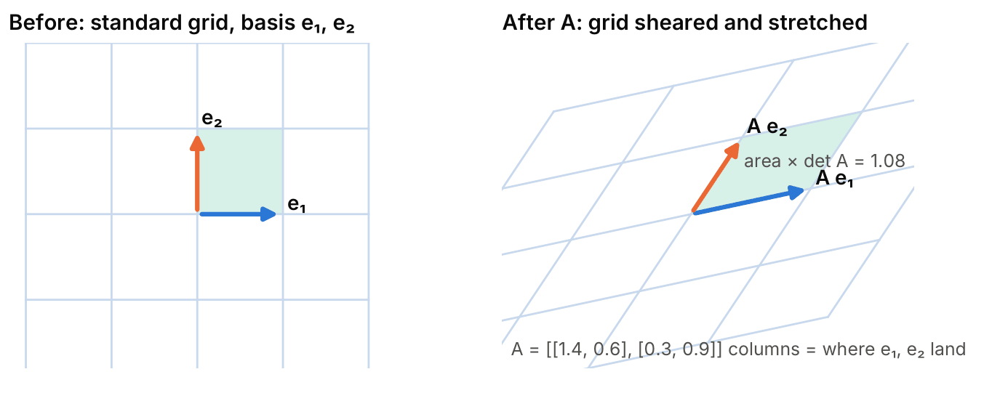
The most useful mental model: a matrix is a machine that moves space. Multiply a vector by a matrix and it gets rotated, stretched, sheared or projected. The columns tell you exactly what the machine does: column one is where the x-axis goes, column two is where the y-axis goes. A rotation matrix keeps lengths and angles; a camera intrinsic matrix scales metric directions into pixels and shifts the origin to the image centre; a colour correction matrix in the ISP mixes the sensor's R, G and B channels into standard colour space.
Multiplying matrices composes transformations. If Tveh←cam moves points from the camera frame to the vehicle frame and Tworld←veh moves them to the world, then Tworld←veh·Tveh←cam does both. Order matters: rotating then translating is not translating then rotating. Most frame-convention bugs are an order bug or a forgotten inverse.
The determinant is the factor by which a matrix scales area (2D) or volume (3D). A rotation has determinant +1; a mirror flips the sign to −1 (a classic sign that a left-handed frame slipped in); a determinant of zero means the matrix flattens space onto a line or plane and information is destroyed. The rank counts how many independent directions survive. A projection from 3D to 2D has rank 2 by nature — that is the mathematical statement that a single image cannot give depth.
Solving linear systems
Many problems reduce to A x = b : find the unknown x given a known matrix and measurements. When A is square and well-behaved, there is exactly one answer. In practice we have more equations than unknowns: forty corner detections to estimate eight homography parameters, thousands of points to fit a ground plane. Noise means no exact answer exists, so we look for the x that makes the total squared error smallest. That is linear least squares, probably the single most used algorithm in this field.
Geometrically, least squares finds the point in the space reachable by A that is closest to b — an orthogonal projection. Algebraically there are three standard ways to compute it, and the choice matters on embedded hardware:
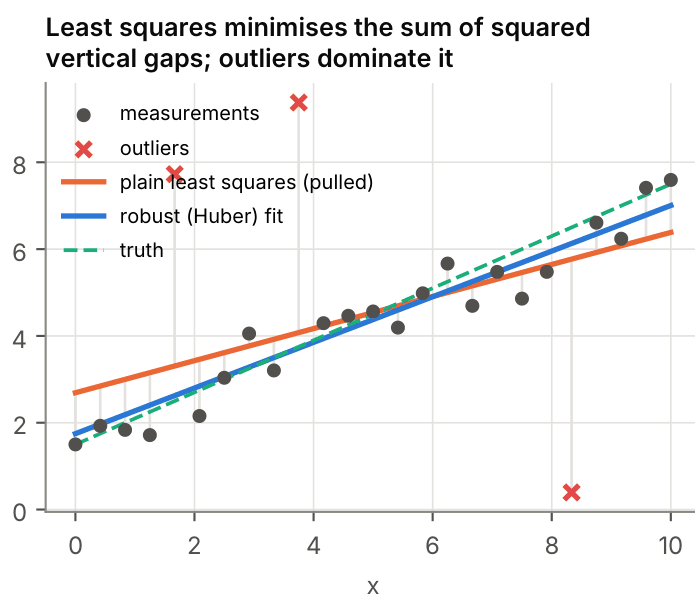
- Normal equations
ATA x = ATbsolved with Cholesky. Fastest and smallest, but squares the condition number, so it loses twice as many digits (Chapter 11). Fine for well-scaled small problems. - QR decomposition. The robust default: slower than Cholesky, much more accurate.
- SVD. Slowest, but handles rank deficiency gracefully and tells you how close the problem is to being degenerate.
Writing x = inv(A)*b is slower and less accurate than solving the system directly with an LU, Cholesky or QR factorisation. The inverse is almost never needed; in code reviews, an explicit .inverse() on anything larger than a 3×3 rotation or 4×4 rigid transform deserves a question. (For rigid transforms use the closed-form inverse: RT and −RTt .)
Factorisations: the workhorses
Solvers do not invert; they factorise a matrix into simpler pieces that are easy to solve. Knowing which one to pick is a practical skill:
| Factorisation | Requires | Typical use in vision |
|---|---|---|
| LU (with pivoting) | Square, invertible | General square systems, small linear solves |
| Cholesky (LLT, LDLT) | Symmetric positive definite | Normal equations, Gauss–Newton steps, Kalman innovation covariance, sampling correlated noise |
| QR | Any, tall matrices fine | Accurate least squares, orthonormalising bases |
| Eigen-decomposition | Square (symmetric is easiest) | Covariance analysis, PCA, plane fitting, corner response |
| SVD | Any matrix | Homogeneous systems (DLT), rank enforcement, nearest rotation, condition number |
Structure and cost
Cost grows fast: a dense n×n factorisation is roughly proportional to n3. Double the number of unknowns and the time goes up eight times. That is why large problems exploit structure. In bundle adjustment the Jacobian is mostly zeros because each observation involves only one camera and one point; sparse solvers and the Schur complement trick turn an impossible dense solve into a fast one. On the small end, fixed-size 3×3 and 4×4 operations can be fully unrolled at compile time with no loops and no heap memory — which is exactly what Eigen's fixed-size types do (Chapter 12).
A 3×3 colour correction matrix runs on every pixel of every frame inside the ISP. The camera pose is a 4×4 matrix applied to every 3D point. Surround view rendering applies a homography or a mesh of transforms to map four fisheye images to one bird's-eye view. A CNN layer is, after the im2col trick, a large matrix multiplication, which is why NPUs are essentially matrix-multiply engines.
"A matrix is a recipe for moving space. Chaining camera, vehicle and world frames is just multiplying matrices in the right order. When we have more measurements than unknowns, which is always, we don't solve the equations exactly — we find the answer that disagrees with the data the least."
3Eigenvalues and eigenvectors
Most vectors change direction when a matrix acts on them. A few special ones do not: they only get longer or shorter. These are the eigenvectors, and the stretch factors are the eigenvalues. They reveal the natural axes of a problem.
The intuition
Formally, A v = λ v : the matrix A acting on the eigenvector v gives the same vector scaled by the eigenvalue λ . Picture the sheared grid in Figure 2.1: almost every arrow tilts, but along two particular directions the arrows just stretch. Those directions are what the matrix "really does", stripped of the coordinate system we happened to write it in.
For the symmetric matrices that dominate vision — covariance matrices, structure tensors, Hessians, ATA — the story is especially clean: the eigenvalues are real, the eigenvectors are perpendicular, and the matrix is just "stretch by λ1 along v1, by λ2 along v2". Libraries have dedicated, faster and more accurate solvers for this case (Eigen's SelfAdjointEigenSolver , NumPy's eigh ), and you should use them.
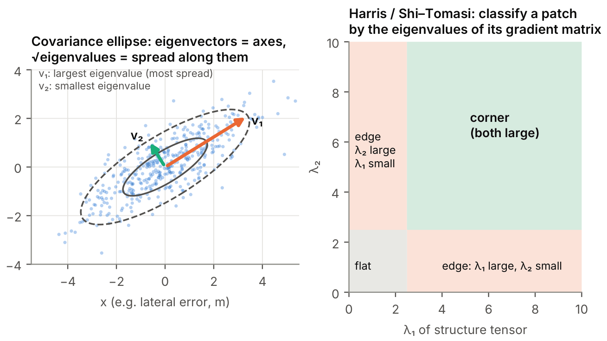
Where eigenvalues earn their keep
Uncertainty ellipses
A tracker's position estimate comes with a 2×2 covariance matrix. Its eigenvectors point along the directions of largest and smallest uncertainty, and the eigenvalues are the variances in those directions. For a single forward camera the ellipse is typically long along the viewing ray (depth is poorly observed) and narrow across it (bearing is well observed). Drawing that ellipse is the fastest way to see whether a filter is behaving.
Corners and features
Take a small window, compute image gradients Ix , Iy , and sum their products into the 2×2 structure tensor M = Σ[Ix², IxIy; IxIy, Iy²] . Its eigenvalues measure how strongly intensity changes in the two principal directions. Both small: flat road. One large: an edge such as a lane marking — you can slide along it without noticing (the aperture problem). Both large: a corner, which can be located precisely and tracked from frame to frame. Shi–Tomasi uses the smaller eigenvalue directly; Harris avoids computing eigenvalues with det(M) − k·trace(M)² , which equals λ1λ2 − k(λ1+λ2)² . Calibration-pattern corner refinement and optical-flow feature selection rely on exactly this.
Plane fitting and PCA
Given 3D points believed to lie on the road surface (from stereo, structure-from-motion or LiDAR), subtract their mean and compute the 3×3 covariance. The eigenvector with the smallest eigenvalue is the plane normal; the smallest eigenvalue itself measures how flat the points are. This is principal component analysis (PCA): the eigenvectors of the covariance sorted by eigenvalue are the directions of most to least variation. The same idea fits a line to a lane marking's points, finds the dominant orientation of a parking slot, or compresses feature vectors.
Stability of filters and control loops
A discrete system xk+1 = F xk is stable when every eigenvalue of F has magnitude below one: errors shrink each step instead of growing. This is how you check that a tracking filter's error dynamics converge, or that a temporal smoothing loop in the ISP will not oscillate.
Nobody solves the characteristic polynomial det(A − λI) = 0 numerically beyond 2×2; root-finding on polynomials is badly conditioned. Libraries use iterative methods (QR algorithm, Jacobi rotations, divide-and-conquer) that repeatedly apply orthogonal transformations until the matrix becomes diagonal. For 2×2 and 3×3 symmetric matrices there are closed-form solutions that are attractive on embedded targets but need care near repeated eigenvalues.
"Eigenvectors are the natural axes of a problem. For an uncertainty they tell you in which direction you are most unsure; for an image patch they tell you whether it is flat, an edge or a corner; for a cloud of road points the weakest one is the road normal."
4Singular value decomposition
If linear algebra had a Swiss army knife it would be the SVD. It works on any matrix, of any shape, and decomposes it into the three simplest possible actions: rotate, stretch along the axes, rotate again.
Rotate, scale, rotate
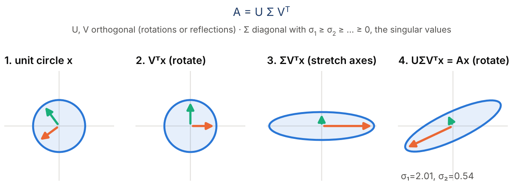
Eigen-decomposition needs a square matrix and can produce complex numbers; the SVD always exists and is always real. The singular values tell you how much the matrix stretches each direction. If one of them is zero, the matrix flattens that direction away completely, and the corresponding column of V spans the null space: the inputs that produce zero output. Counting the non-zero singular values gives the rank. The ratio of the largest to the smallest is the condition number, the amplification factor for errors (Chapter 11).
Five jobs the SVD does in a vision stack
1. Solving homogeneous systems: homography and DLT
Many geometric estimation problems end up as A h = 0 , where h holds the unknown entries of a homography, fundamental matrix or projection matrix, and the scale is arbitrary. The trivial solution h = 0 is useless, so we ask for the unit vector that makes |A h| as small as possible. The answer is the column of V belonging to the smallest singular value. This is the Direct Linear Transform (DLT). Each point correspondence gives two equations; four correspondences determine a homography; with more we get a leastsquares estimate. It is the first step of EOL calibration on a floor pattern, of IPM set-up, and of the RANSAC loop in findHomography .
2. Enforcing structure: rank and orthogonality
Noisy estimation produces matrices that are almost, but not quite, what the theory demands. A fundamental matrix must have rank 2; a rotation matrix must be orthonormal. The fix is the same: take the SVD, repair the singular values, multiply back. Setting σ3 = 0 gives the closest rank-2 matrix. Setting all singular values to 1 gives the closest rotation: R = U·diag(1, 1, det(UVT))·VT , where the determinant term prevents a reflection. Use this whenever a rotation has drifted after repeated multiplication or came out of a linear solver.
3. Aligning point sets: Kabsch / Procrustes
Given matching 3D points in two frames — calibration target corners measured in the vehicle frame and the same corners triangulated by the camera, or a LiDAR scan and a camera reconstruction — the best rigid T , decompose, transform comes from one 3×3 SVD. Centre both sets, build the cross-covariance H = Σ piqi and read off the rotation with the formula above; the translation follows from the centroids. It is closed form, fast, and an excellent initial guess before nonlinear refinement.
4. Pseudo-inverse and diagnosing degeneracy
The pseudo-inverse A+ = VΣ+UT solves least-squares problems even when A is rank-deficient, by refusing to divide by tiny singular values. More valuable in practice is the diagnosis: if the smallest singular value of a calibration Jacobian is tiny, some combination of parameters is not observable from the data. Driving straight on a flat road, for example, gives online calibration little information about camera roll. The singular vector says which combination is unobservable — useful for designing calibration manoeuvres.
5. Compression and denoising
Keeping only the largest k singular values gives the best rank-k approximation of a matrix. This underlies PCA, compressing network layers (low-rank factorisation to save NPU compute), and separating a static background from moving objects in video.
Building a DLT matrix from raw pixel coordinates mixes entries around 1 with entries around 106 (products of coordinates near 1000). For 30 random correspondences on a 1920×1280 image we measured a condition number of about 6.3 million. After Hartley normalisation — shift the points so their centroid is at the origin and scale so their mean distance is √2 — the same problem has a condition number of about 3.4. Same data, same algorithm, six orders of magnitude less error amplification. Always normalise, then undo the normalisation on the result.
"The SVD splits any matrix into rotate, stretch, rotate. The stretch factors tell you how well-posed a problem is; the weakest direction gives you the best answer to 'find the parameters that make these equations as close to zero as possible', which is how we estimate homographies from a calibration pattern."
5Camera geometry
This is where linear algebra meets the physical car. Camera geometry describes how a point in the world becomes a pixel, and — more usefully — how to go back from pixels to metres. Getting it right is the difference between a pretty picture and a measurement.
A chain of coordinate frames
Every number in the system lives in some frame, and the same physical point has different coordinates in each. Projecting a point from the world into a fisheye image passes through a fixed sequence of steps:
The first two arrows are rigid transforms (rotation + translation, 6 degrees of freedom). The third is the perspective division that destroys depth. The last applies the lens model and the intrinsic matrix. Note the axis conventions: the vehicle frame has z up, the camera optical frame used by OpenCV has y down and z forward. Converting between them is a fixed permutation-and-sign rotation that is a frequent source of 90° and 180° bugs.
"The camera pose" is ambiguous: does the matrix move points from camera to vehicle, or from vehicle to camera? Adopt a naming rule and enforce it everywhere, e.g. T_vehicle_camera maps points expressed in camera to expressed in vehicle. Then products chain visibly: T_world_vehicle * T_vehicle_camera = T_world_camera . The inner frame names must match. Mismatched names are visible in code review; mismatched mental models are not.
Homogeneous coordinates: the trick that makes it all linear
A rotation is a matrix multiplication, but a translation is an addition, and perspective is a division. None of these compose cleanly — until we append a 1 to every point. A 3D point (X, Y, Z) becomes (X, Y, Z, 1) , and any scalar multiple (wX, wY, wZ, w) represents the same point. Now:
- A rigid transform becomes one 4×4 matrix
T = [R t; 0 1], so rotation and translation compose by multiplication. - Perspective division is deferred: we multiply by matrices freely and divide by the last coordinate once at the end.
- Points at infinity become ordinary:
(X, Y, Z, 0)is a direction. Vanishing points — where parallel lane lines meet in the image — are the images of such points and carry the camera's rotation relative to the road. Online calibration exploits exactly this. - In 2D, a line is also a 3-vector
l, a point lies on it whenl·p = 0, the line through two points isp1×p2and the intersection of two lines isl1×l2.
The pinhole model
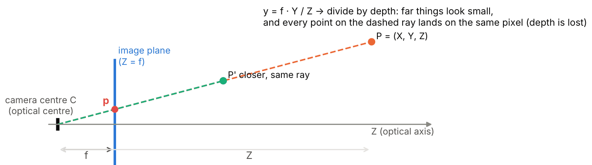
The ideal camera is a pinhole. A point at camera coordinates (X, Y, Z) lands at x = X/Z, y = Y/Z on the normalised image plane. The intrinsic matrix converts that to pixels:
\(f_x, f_y\): focal length in pixels · \(c_x, c_y\): principal point · \(s\): skew (zero for modern sensors) · \(\sim\) means "equal up to scale"
The focal length in pixels is the physical focal length divided by the pixel pitch: a 1.2 mm lens on 3 µm pixels gives f ≈ 400 px. The principal point is where the optical axis hits the sensor; it is rarely exactly at the image centre because of assembly tolerances, and it is one reason every camera is calibrated individually at end of line.
Real lenses: distortion and fisheye models
Real lenses bend rays. For narrow and medium field-of-view cameras (front cameras, typically below about 120°) the Brown–Conrady model works well: radial distortion as a polynomial in the squared radius, xd = x(1 + k1r² + k2r⁴ + k3r⁶) , plus small tangential terms p1, p2 for lens decentring.
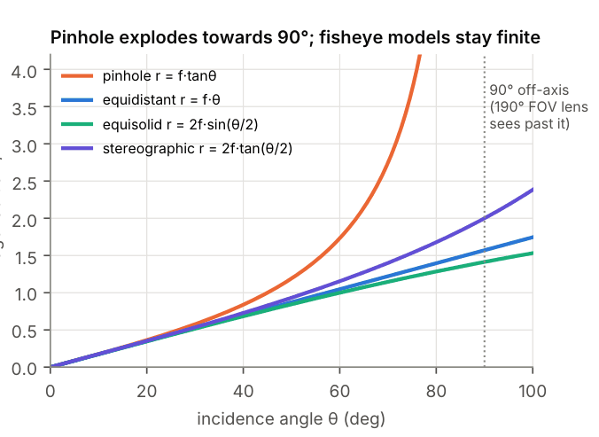
Surround-view cameras use fisheye lenses with 180–200° field of view, and here the pinhole model breaks down fundamentally: its image radius r = f·tanθ goes to infinity at 90°. Fisheye models describe the radius as a function of the angle instead. The Kannala–Brandt model (used by OpenCV's fisheye module) writes r = f·(θ + k1θ³ + k2θ⁵ + k3θ⁷ + k4θ⁹) , an odd polynomial around the equidistant model. Alternatives include Scaramuzza's polynomial model, the Unified and Extended Unified Camera Models, and the Double Sphere model, which trade accuracy against cost of the inverse (pixel to ray) computation.
Undistortion on target is almost never computed per pixel with the formula. Instead, an offline step computes a lookup table (a remap mesh) that says, for every output pixel, which input coordinate to sample. Many automotive SoCs have a dedicated hardware block (often called LDC, lens distortion correction, or a warp engine) that executes such meshes with bilinear interpolation. The mathematics moves into the table generator; the precision of the table becomes the thing to verify.
Surround view and inverse perspective mapping
Points on a plane are special. If every point of interest lies on the road ( Z = 0 in the vehicle frame), the third column of the rotation drops out of the projection and the mapping from road to (undistorted) image becomes a 3×3 matrix, a homography:
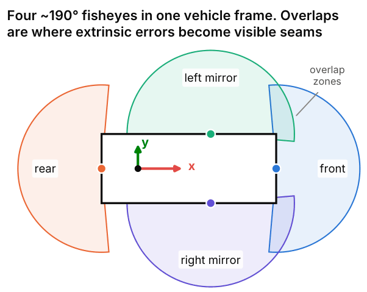
Inverting H maps image pixels back to metric road coordinates. This is inverse perspective mapping (IPM), the basis of the bird's-eye view in surround view, of parking slot detection in the top-down domain, and of measuring distances to road markings. Each camera has its own homography; the four results are stitched into one top view, with blending in the overlap zones.
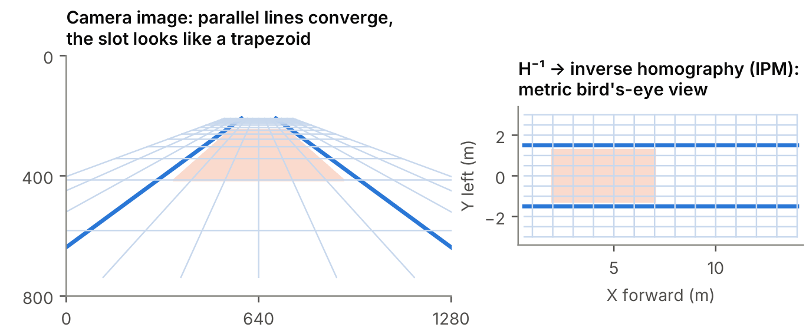
IPM is exact only for points on the assumed plane. Anything with height — a pedestrian, a kerb, the bumper of a parked car — gets stretched radially away from the camera, producing the familiar "smeared" objects in a bird's-eye view. Road slope, vehicle pitch under braking, and suspension changes with load also violate the assumption: a 1° pitch change at 20 m is not a small error (see Chapter 7). Production systems compensate with dynamic extrinsic estimation, ride-height sensors, or by rendering onto a 3D bowl instead of a flat plane.
Calibration: finding K, distortion and pose
Intrinsic calibration estimates focal length, principal point and distortion, usually per camera at the supplier, by imaging a known pattern (checkerboard, ChArUco, circle grid) from several viewpoints. Zhang's method is the classic recipe: DLT homographies for each view give a closed-form initial guess, then nonlinear least squares (Levenberg–Marquardt, Chapter 9) refines all parameters together by minimising reprojection error — the pixel distance between where corners were detected and where the model says they should be.
Extrinsic calibration estimates each camera's pose on the vehicle. At end of line (EOL) the car stops in a station with targets at known positions on the floor or walls; the camera detects the targets, a PnP solver (Perspective-n-Point) estimates the pose, and the result is checked against tolerances and stored. Online or targetless calibration keeps the extrinsics correct over the vehicle's life by observing the world while driving: vanishing points of lane lines give pitch and yaw, the ground plane from feature motion gives height and roll, and overlapping surround-view cameras must agree on the same road texture. Each of these is an estimation problem with an uncertainty, and a well-designed system knows when it has not observed enough to update.
Two views: epipolar geometry and depth
With two images of the same scene — a stereo pair or one camera at two moments — a point seen in the first image must lie on a specific line in the second, the epipolar line. The essential matrix (calibrated cameras, 5 degrees of freedom) and fundamental matrix (uncalibrated, 7 degrees of freedom) encode this constraint and the relative pose. Once the relative pose is known, matching points can be triangulated into 3D. For a single moving camera, the translation is known only up to scale; the scale comes from wheel odometry, known camera height above the road, or object size priors.
The rear-view guideline overlay is the forward projection: predicted wheel paths on the road (from steering angle and a kinematic model) are drawn into the distorted fisheye image using extrinsics, the lens model and K. A 1° extrinsic error makes the lines visibly disagree with the real parking bay. Surround-view stitching seams, misaligned guidelines and wrong distance estimates are, in most customer complaints, calibration or frame-convention problems rather than perception problems.
"Calibration tells the software exactly how each camera bends light and where it sits on the car. With that, every pixel becomes a ray in vehicle coordinates. If we also assume the road is flat, each ray hits the road at one point, so pixels become metres — that is the bird's-eye view."
6Rotations and quaternions
A rotation in 3D has only three degrees of freedom, but there is no way to describe it with three numbers that is free of singularities. Every representation is a compromise, and knowing which one to use where avoids some of the hardest bugs to diagnose.
The representations
| Representation | Numbers | Strengths | Weaknesses / typical use | |
|---|---|---|---|---|
| Rotation matrix | 9 | Applies to a vector in 9 multiplies; composition is a matrix product; unique, no ambiguity | 6 redundant constraints (orthonormal, det = +1) drift with rounding. Use for applying rotations to many points. | |
| Euler angles (yaw, pitch, roll) | 3 | Human readable; matches how engineers specify mounting angles | 12 possible axis orders; gimbal lock; angle wrap at ±180°; terrible for interpolation and optimization. Use for display, configuration files, specs. | |
| Axis–angle /rotation vector | 3 (or 4) | Minimal; physically meaningful (direction = axis, length = angle); natural for small rotations and angular velocity | Singular at 180°; composition needs conversion. OpenCV's rvec (Rodrigues) is this. | |
| Unit quaternion | 4 | No gimbal lock; cheap composition (16 multiplies); easy renormalisation; smooth interpolation (slerp) | q and −q are the same rotation; not intuitive; many conventions. Use for storing and composing orientation, IMU integration, interpolation. |
Euler angles and gimbal lock
Describing orientation as three sequential rotations about axes is natural: yaw about z, then pitch about the new y, then roll about the new x (the ZYX order common for vehicles). The problem appears when the middle rotation reaches ±90°: the first and third axes line up, one degree of freedom vanishes, and near that configuration small orientation changes cause huge, jumping angle values. Vehicle cameras rarely pitch 90°, but a downward-looking surround camera mounted under a mirror can sit closer to a singularity than expected depending on the chosen convention. More practically, Euler angles are ambiguous: "pitch 10°, yaw 2°" means different rotations under different orders and intrinsic/extrinsic interpretations. Always state the convention in interface documents.
Quaternions without the mystery
A unit quaternion is four numbers, q = (w, x, y, z) , built from an axis n and an angle θ :
Rotate a vector: \(v^{\prime} = q \otimes (0, v) \otimes q^{*}\) · compose: \(q_{\text{total}} = q_2 \otimes q_1\) · inverse of a unit quaternion = its conjugate \(q^{*}\)
Think of it as an axis–angle representation packaged so that composing rotations is a simple product. Why the half angle? Because the vector is multiplied by q on one side and its conjugate on the other, each contributing half the rotation. A consequence: q and −q describe the same rotation (rotating by θ about n equals rotating by 360°−θ about −n). When comparing or averaging quaternions, first flip them to the same hemisphere (make w ≥ 0 or make dot products positive).
Quaternions also make renormalisation trivial: after many compositions, rounding pushes |q| away from 1; dividing by the norm fixes it. A rotation matrix in the same situation needs re-orthonormalisation via SVD or Gram–Schmidt.
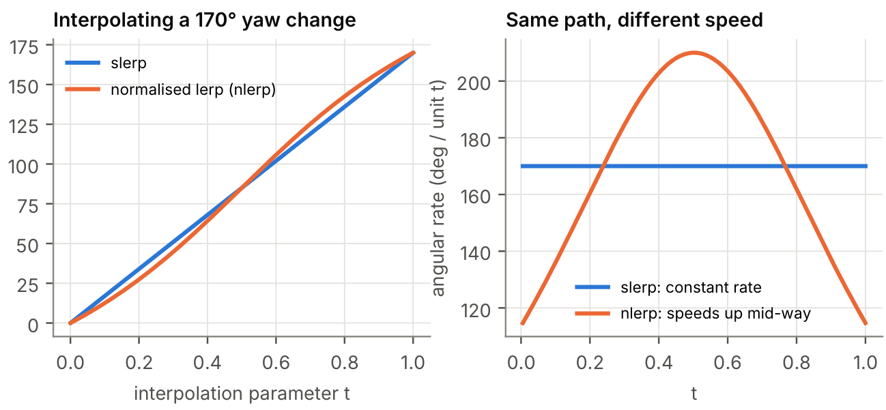
Interpolation is where quaternions shine. Timestamp alignment needs the camera orientation at the exact mid-exposure time of each image row, but IMU or odometry poses arrive at different times. Slerp moves along the great-circle arc between two quaternions at constant rate. Interpolating Euler angles componentwise, in contrast, produces wobbly, non-physical paths and breaks at the ±180° wrap.
Rotations form a curved space (the group SO(3)); rigid transforms form SE(3). You cannot add two rotations or average rotation matrices component-wise and expect a rotation. The tangent space at any rotation is an ordinary 3-vector space (so(3)), where small rotations can be added. The exponential map converts a small rotation vector δ into a rotation ( R = exp([δ]×) , Rodrigues' formula), the logarithm goes back. Optimizers therefore update a rotation as R ← R·exp([δ]×) , solving for a 3-vector δ each iteration, instead of nudging the 9 or 4 raw numbers. Libraries such as Sophus and manif package these operations; Ceres provides manifold (local parameterisation) support for quaternions. The difference between "left" and "right" perturbation (global vs local frame) is another convention to fix explicitly.
Order of components. Eigen's constructor is Quaterniond(w, x, y, z) but q.coeffs() returns [x, y, z, w] . SciPy's Rotation.from_quat expects scalar-last [x, y, z, w] by default; ROS messages store x, y, z, w; many papers and MATLAB write w first. Handedness. Hamilton convention (Eigen, ROS, most robotics) and JPL convention (some aerospace and VIO literature) define quaternion multiplication differently, so the same four numbers can mean a rotation and its inverse. Active vs passive. Does the quaternion rotate the vector, or the frame? Write the convention into the interface specification and add a unit test that rotates a known vector (e.g. 90° about z must map x to y).
Extrinsics are usually specified to customers as Euler angles in a stated order, stored internally as quaternions or rotation matrices, and optimised in the tangent space. Ego-motion from wheel odometry and yaw rate is integrated as small rotations per time step. Rolling-shutter compensation interpolates poses per image row with slerp. IMU-based camera stabilisation composes quaternions at hundreds of hertz.
"We show rotations to people as yaw, pitch and roll because they are intuitive, but we compute with quaternions or matrices because angles have singularities and ambiguous conventions. A quaternion is basically an axis and an angle packed so that combining rotations is cheap and stable."
How solvers optimise rotations without Euler singularities or quaternion normalisation, using the exponential map and the tangent space of SO(3) and SE(3), is the subject of Chapter 17.
7Calculus
Calculus is the mathematics of change. In vision it answers three recurring questions: where does the image change quickly (edges), how sensitive is an output to its inputs (Jacobians), and how do small changes accumulate over time (integration).
Derivatives in images: edges and gradients
A derivative measures how quickly a function changes. An image is a function of position, so its derivative is largest where brightness changes abruptly: at edges. Lane markings, kerbs, parking lines and object boundaries are all large gradients. The first derivative peaks at an edge; the second derivative crosses zero there. The magnitude of the second derivative over an image is a classic focus/sharpness metric, used in camera module production and for detecting a dirty or fogged lens.
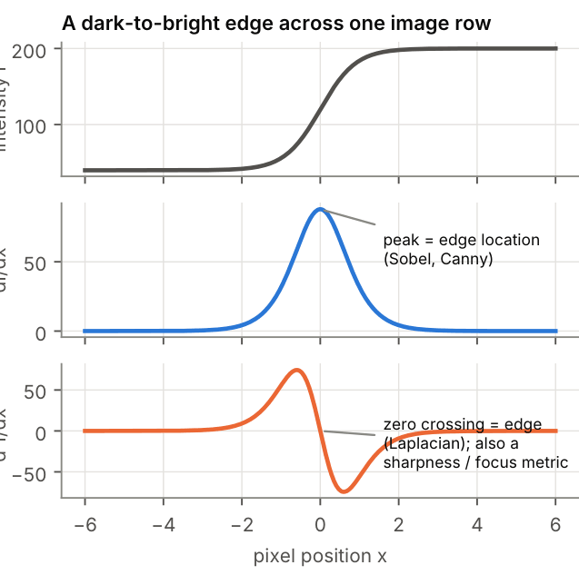
Images are discrete, so derivatives become finite differences: the difference between neighbouring pixels. Because differencing amplifies noise, practical operators combine differentiation with a little smoothing. The Sobel operator does exactly that, and it is a convolution (Chapter 10):
Each kernel = a difference in one direction × a [1 2 1] smoothing in the other. Gradient magnitude \(\sqrt{G_x^2+G_y^2}\) gives edge strength; \(\operatorname{atan2}(G_y, G_x)\) gives edge orientation, e.g. the direction of a parking line.
The gradient is a vector: it points in the direction of steepest increase, and it is perpendicular to the edge. Canny edge detection, HOG features, the Harris structure tensor and optical flow are all built from it. Even CNNs learn gradient-like filters in their first layer.
Partial derivatives and the Jacobian
Most functions in vision have many inputs and many outputs. Projecting a 3D point depends on six pose parameters, four intrinsics and several distortion coefficients, and produces two pixel coordinates. The Jacobian is the matrix of all partial derivatives: entry (i, j) says how much output i moves when input j changes slightly. It is the multi-dimensional "slope", and it is everywhere:
- Optimization: Gauss–Newton and Levenberg–Marquardt use the Jacobian of the residuals to decide the next step (Chapter 9). Uncertainty propagation: if inputs have covariance Σ, outputs have approximately
J Σ JT. This is how a - calibration uncertainty becomes a distance uncertainty, and how the Kalman filter moves covariance through its models.
- Sensitivity analysis: which tolerance matters most? The largest Jacobian entries tell you. This is directly useful for specifying mounting tolerances and EOL acceptance limits.
A camera at height h = 1.3 m measures distance to a point on a flat road from the angle below the horizon: d = h / tan(α) . At d = 20 m, α ≈ 3.7°. The derivative ∂d/∂α = −(h² + d²)/h gives about 5.4 m per degree — a 27% error from a single degree of pitch, which is roughly the pitch change from hard braking or a heavy load in the boot. The exact numbers are even less symmetric: +1° gives 15.7 m, −1° gives 27.4 m. The linear estimate is fine for small errors but understates the far-side error, which is the topic of the next section.
Taylor series and linearisation
Close to any point, a smooth function looks like a straight line (or a flat plane in many dimensions). The Taylor expansion f(x + δ) ≈ f(x) + Jδ replaces a hard nonlinear function by its tangent. This single idea powers Newton's method, Gauss–Newton optimization, the Extended Kalman Filter, and first-order error propagation.
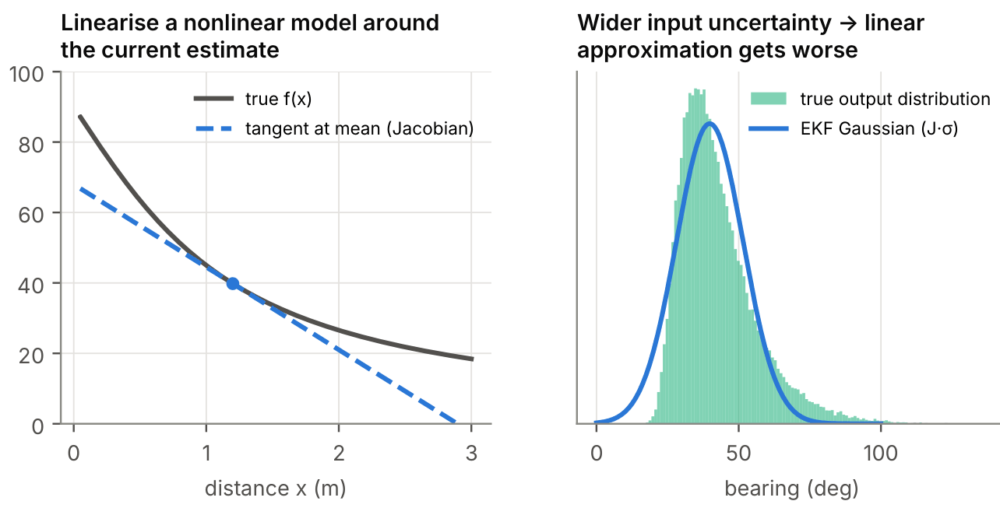
Linearisation is only valid locally. If the current estimate is far from the truth, or the uncertainty is large compared to the curvature of the function, the tangent misleads. That is why nonlinear optimizers need a good initial guess, why EKFs can diverge after a bad initialisation, and why alternatives such as the Unscented Kalman Filter (which pushes a few carefully chosen sample points through the true function instead of a tangent) exist.
Integration: accumulating change
Integration is the reverse of differentiation: summing small changes to get a total. Dead reckoning integrates wheel speed and yaw rate over time to obtain the vehicle's motion between frames — essential for parking systems that must remember a slot after it leaves the camera view. Because small biases are integrated too, the error grows over time (drift): a 0.1°/s yaw-rate bias becomes 6° of heading after a minute. The choice of integration scheme (simple Euler steps vs midpoint or Runge–Kutta) matters at low frame rates or during fast manoeuvres.
In image processing, the integral image stores at each pixel the sum of all pixels above and to the left. Any rectangular sum then costs four lookups regardless of size, which is why box filters and Haar-like features are so cheap.
How derivatives are computed in software
| Method | How it works | Trade-off | |
|---|---|---|---|
| Analytic | Derive the formula by hand (or with a symbolic tool) and code it | Fastest and exact; error-prone to derive; must be tested against a numeric check | |
| Numeric (finite differences) | (f(x+h) − f(x−h)) / 2h | Trivial to write; choosing h is a precision trade-off (too large: truncation error; too small: rounding error); costly with many parameters | |
| Automatic differentiation | The program tracks derivatives alongside values through every operation (Ceres "Jets", PyTorch autograd, JAX) | Exact to machine precision and automatic; some runtime overhead; the standard for prototyping and for training networks |
Backpropagation, the algorithm that trains neural networks, is nothing more than the chain rule of calculus applied efficiently from the loss backwards through every layer: reverse-mode automatic differentiation.
"Edges are where the image changes fastest, so we find them with derivatives. The Jacobian tells us how sensitive our outputs are to every input — for example how many metres of distance error one degree of camera pitch causes — and that drives both our optimizers and our tolerance specifications."
Forward mode (dual numbers, Ceres Jets) and reverse mode (backpropagation) are worked through step by step in Chapter 18.
8Probability and statistics
Every pixel is noisy, every detection is uncertain, every calibration has a tolerance, and every safety argument is a statistical claim. Probability gives us rules for reasoning with imperfect evidence; statistics tells us how much to believe our test results.
The vocabulary
A random variable is a quantity whose value is uncertain: the true distance to the car ahead, the noise in a pixel. Its mean is the centre, its variance the average squared spread, and the standard deviation (σ) the spread in the original units. For several variables, the covariance matrix also captures how errors move together — lateral and longitudinal position error of a tracked object are usually correlated, which is why the uncertainty ellipse in Figure 3.1 is tilted.
The Gaussian (normal) distribution appears everywhere for three reasons. The central limit theorem says that the sum of many small independent effects tends towards a Gaussian. It is fully described by just a mean and a covariance. And it is closed under linear operations: transform a Gaussian linearly and you get another Gaussian, which is what makes the Kalman filter possible. Remember also its limits: real error distributions often have heavier tails (occasional gross errors from mismatches, reflections, occlusions), which is why robust methods exist.
Sensor noise: where uncertainty begins
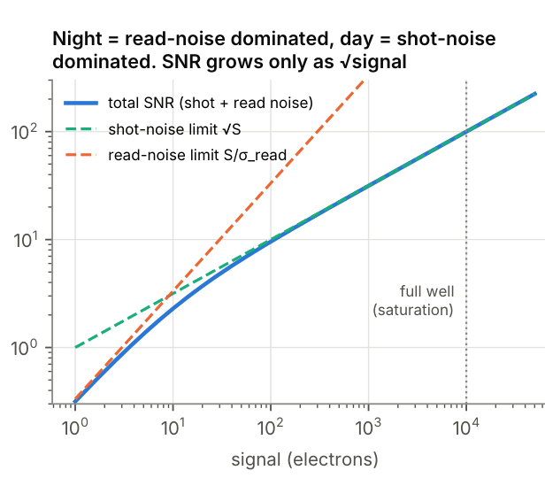
Light arrives as discrete photons, and the number arriving in a pixel during an exposure follows a Poisson distribution: if the mean is S electrons, the standard deviation is √S. This shot noise is physics, not a sensor defect. On top come read noise from the electronics (constant, a few electrons), dark current (grows with temperature, roughly doubling every 6–8 °C, painful on a hot dashboard), and fixed-pattern effects such as pixel-topixel gain differences (PRNU).
The result: signal-to-noise ratio grows only with the square root of the signal. Quadrupling the light doubles SNR. At night the image is read-noise limited and SNR collapses; in daylight shot noise dominates. This noise model is not academic: it sets ISP denoising strength as a function of gain, determines the minimum contrast at which a pedestrian can be detected, and is measured on every sensor via the photon transfer curve (EMVA 1288 methodology).
Bayes' rule: updating beliefs with evidence
posterior = likelihood × prior / evidence
Bayes' rule combines what we believed before (the prior) with how likely the new observation is under each hypothesis (the likelihood). Its most important practical lesson is the base-rate effect. Suppose a classifier detects a pedestrian when one is present 99% of the time and fires falsely on 1% of empty frames, and pedestrians appear in 1 in 1000 frames of a given scenario. When it fires, the probability that a pedestrian is really there is only about 9%: the 1% false alarms on the 999 empty frames outnumber the true hits. This is why single-frame decisions are rarely acceptable for braking and why tracking, temporal confirmation and multi-sensor fusion — all forms of accumulating evidence — are standard.
The Kalman filter
The Kalman filter is Bayes' rule for Gaussians, run recursively over time. It keeps a state (for example position and velocity of a tracked vehicle) and its covariance, and repeats two steps forever:
Move the state forward with physics: \(x = Fx\). Uncertainty grows: \(P = FPF^{\top} + Q\). \(Q\) = how much we distrust the motion model (unexpected acceleration, turning).
Compare prediction with measurement: innovation \(y = z - Hx\). Gain \(K = PH^{\top}(HPH^{\top} + R)^{-1}\). Correct: \(x \mathrel{+}= Ky\), \(P = (I - KH)P\). \(R\) = measurement noise.
⇄ every frame
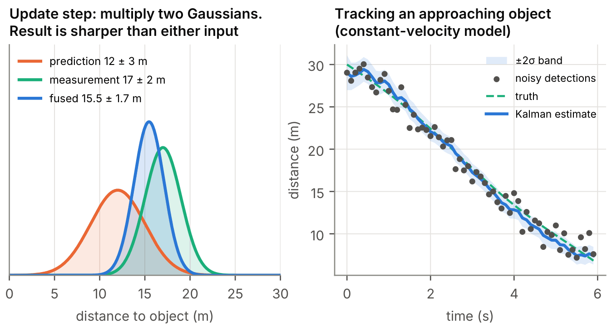
The Kalman gain K is a data-driven blending weight: if the measurement is precise relative to the prediction, trust it; if not, trust the model. Tuning a Kalman filter is mostly choosing Q and R , which is a trade-off between smoothness and responsiveness. Too small a Q and the track lags behind a braking vehicle; too large and the output is jittery.
Real measurement models are nonlinear (pixels relate to positions through projection). The Extended Kalman Filter linearises them with Jacobians at each step (Chapter 7); the Unscented Kalman Filter propagates sigma points instead. Multi-object trackers add data association: which detection belongs to which track? The Mahalanobis distance d² = yT S−1 y measures the innovation in units of its expected uncertainty, and it follows a chi-square distribution. A gate rejects associations beyond, for example, 9.21 for a 2D measurement (99% of correct associations fall inside). Assignment between many tracks and detections is then solved with the Hungarian algorithm or probabilistic schemes such as JPDA.
A filter whose covariance says ±0.2 m while the real error is ±1 m will reject valid measurements through gating and then lose the track. Check consistency on recorded data: the normalised innovation squared should average the measurement dimension (for example 2 for a 2D measurement). If it averages 10, the filter is lying about its confidence.
RANSAC: estimation when many data are wrong
Feature matches between images contain gross mistakes. Least squares averages them in and fails (Figure 2.2). RANSAC (RANdom SAmple Consensus) flips the approach: repeatedly pick the minimum number of points needed to compute a model (2 for a line, 4 for a homography, 5 for an essential matrix), compute it, and count how many other points agree within a threshold. Keep the model with the most supporters, then refit on all its inliers.
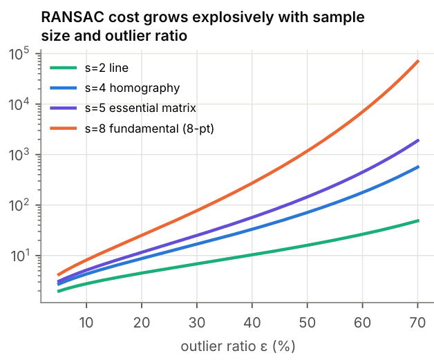
How many trials are needed? With outlier ratio ε, sample size s and desired success probability p:
At 50% outliers and 99% confidence, a homography needs about 72 iterations, the eight-point fundamental matrix about 1 177. This is why minimal solvers with small sample sizes are valuable, and why the iteration budget on an embedded target must be set from the worst expected outlier ratio, not the average. Modern variants (PROSAC, LO-RANSAC, MAGSAC, OpenCV's USAC framework) order samples by match quality and refine locally to converge faster.
Measuring perception: precision, recall, IoU
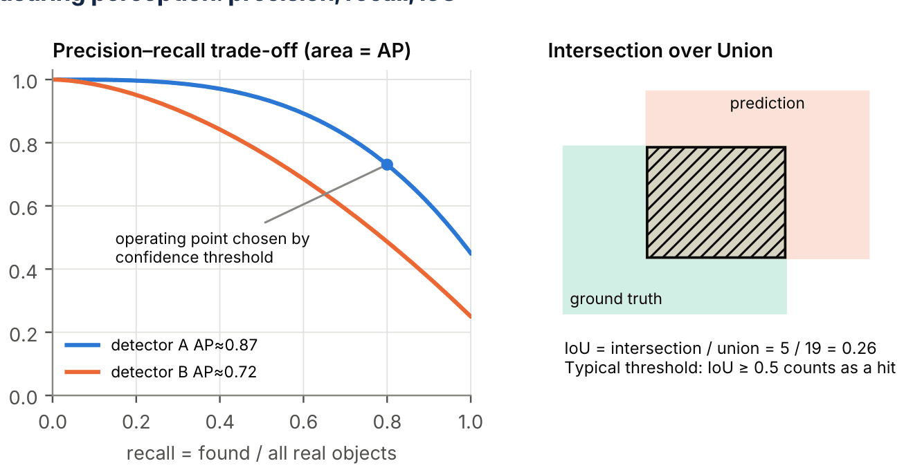
Precision is the fraction of detections that are real; recall is the fraction of real objects that were detected. Raising the confidence threshold trades recall for precision. Average precision summarises the whole curve, and mAP averages it over classes (and in the COCO convention over IoU thresholds from 0.5 to 0.95). These are good for comparing networks, but they are not what a function owner needs. Automotive KPIs are usually expressed in operational terms: false activations per 1000 km or per hour, missed detections within a defined distance and time-to-collision window, localisation error in metres for parking slots. Translating between the two is part of the job.
Statistics for validation and safety
A test result is itself a random variable. If a function had zero false brake events in 10 000 km of testing, what can we claim? The rule of three gives a quick answer: with zero failures in n independent trials, the 95% upper confidence bound on the failure rate is about 3/n. Zero events in 10 000 km supports "fewer than 3 per 10 000 km" at 95% confidence, and nothing stronger. To support a target of one event per 105 km you need roughly 3×105 km without an event — which is why validation strategies combine fleet data, scenariobased testing, simulation and re-simulation of recorded data, as encouraged by ISO 21448 (SOTIF).
Other tools worth knowing by name: confidence intervals on any metric (a recall of 96% measured on 200 pedestrians has an interval of several percentage points); bootstrapping, which resamples the test set to estimate that uncertainty without formulas; hypothesis tests for deciding whether a new software release is really better or just lucky on this dataset; and awareness of distribution shift: statistics only generalise to conditions represented in the data, so coverage of the operational design domain (weather, lighting, regions, camera variants) matters as much as raw kilometres.
"Every measurement comes with an error bar, and the Kalman filter is the standard way to combine predictions and noisy measurements according to how much each deserves to be trusted. For validation, zero failures in N kilometres only proves the failure rate is below about three over N — that is why we combine driving, scenarios and simulation."
Distributions for counts and waiting times are in Chapter 14; confidence intervals, sample sizes, hypothesis tests and correlated data in Chapter 16.
9Optimization
"Find the best" is the hidden verb in most of computer vision. The best calibration parameters, the best pose, the best line through noisy points, the best network weights. Optimization turns "best" into a number we can minimise and an algorithm that minimises it.
Cost functions
Every optimization problem has three ingredients: parameters to choose (intrinsics, a pose, network weights), a cost function that scores a candidate (sum of squared reprojection errors, classification loss), and constraints (a rotation must stay a rotation, a focal length must be positive). Designing the cost is engineering: it encodes what "good" means. Reprojection error is measured in pixels because that is where the noise lives; weighting residuals by their inverse noise variance makes the least-squares solution statistically optimal (maximum likelihood under Gaussian noise).
Nonlinear least squares: the calibration engine
When residuals depend nonlinearly on the parameters, as they always do with projection, there is no closedform answer. Iterative methods start from an initial guess and repeat: linearise the residuals with the Jacobian, solve the resulting linear least-squares problem for a step, apply it, repeat until the cost stops decreasing.
- Gradient descent steps downhill along the negative gradient. Simple, but in long curved valleys it zigzags and crawls.
- Gauss–Newton uses
JTJas an approximation of curvature and solvesJTJ δ = −JTr. Near the solution it converges in very few iterations, but far from it the step can overshoot. - Levenberg–Marquardt blends the two:
(JTJ + λI) δ = −JTr. Large λ behaves like cautious gradient descent; small λ like Gauss–Newton. λ shrinks after successful steps and grows after failed ones. LM is the default in calibration (OpenCVcalibrateCamera), bundle adjustment and pose refinement.
Initial guesses matter. Nonlinear costs can have several local minima. The standard pattern is a closed-form linear estimate (DLT, PnP, Kabsch, vanishing points) followed by nonlinear refinement. A calibration that "sometimes converges to nonsense" usually has an initialisation problem, a degenerate data set (unobservable parameter, see Chapter 4), or a frame-convention bug that makes the true answer unreachable.
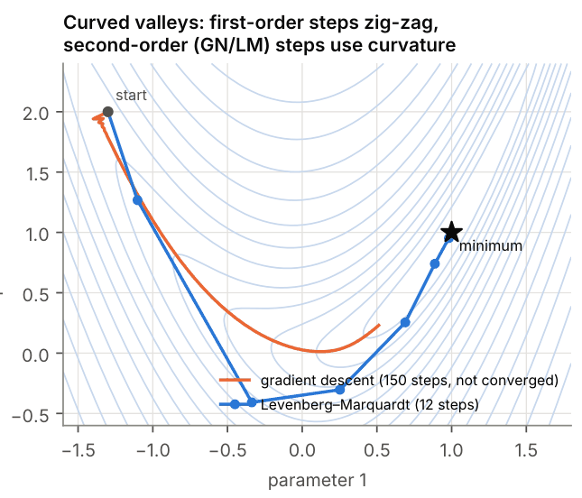
Robust losses: optimization that ignores liars
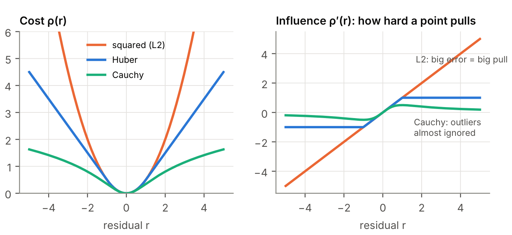
Squared error assumes Gaussian noise. Mismatched features, reflections, or a corner detected on the wrong square violate that assumption. A robust loss (M-estimator) caps the influence of large residuals. The usual implementation, iteratively reweighted least squares, solves a weighted least-squares problem where points with large residuals get small weights, then recomputes the weights. Huber is safe and convex; Cauchy and Tukey reject outliers more aggressively but can create local minima. Combined with RANSAC for initialisation, robust losses make estimation reliable on real data. The threshold is in residual units, so it must be chosen relative to the expected noise (a common start: a few times the noise standard deviation).
Scale: bundle adjustment and sparsity
Bundle adjustment jointly refines many camera poses and 3D points by minimising all reprojection errors at once. With thousands of points the Jacobian is huge but extremely sparse. Solvers exploit this through the Schur complement: eliminate the point parameters first, solve a much smaller system for the cameras, then back-substitute. Libraries such as Ceres Solver, g2o and GTSAM provide this machinery, plus manifold handling for rotations and automatic differentiation. Multi-camera surround-view calibration, structure from motion for map building and visual odometry all use it.
A complete bundle adjustment set up in Ceres and SciPy, with real solver output and the effect of the loss function and linear solver, is in Chapter 19.
Training networks: optimization at the largest scale
Training a CNN is minimising a loss (cross-entropy for classification, regression and IoU losses for boxes, focal loss for class imbalance) over millions of parameters. Second-order methods are impossible at that size, so training uses stochastic gradient descent and its adaptive variants such as Adam: compute the gradient on a mini-batch with backpropagation, take a small step, repeat for many epochs. The learning rate schedule, weight decay (a regulariser that keeps weights small) and data augmentation matter as much as the architecture. Conceptually it is the same loop as calibration — residuals, gradients, steps — only the cost surface is vast, noisy and non-convex.
Other optimization you will meet
Combinatorial assignment: matching detections to tracks or parking-slot corners to slot hypotheses is solved with the Hungarian algorithm in polynomial time. Dynamic programming finds globally optimal paths through a cost grid, as in stereo matching along scanlines or seam selection for surround-view stitching. Constrained optimization with Lagrange multipliers or penalty terms keeps parameters physical. Convex problems have one global minimum and certified solvers, a valuable property when the result must be predictable.
On the target, optimizers run with fixed iteration budgets, warm-started from the previous frame's solution, with explicit handling of non-convergence (keep the old value, raise a quality flag). Online calibration typically accumulates evidence over minutes and only commits an update when the estimate's covariance is small enough. For safety arguments, "the optimizer converged" is not a sufficient statement; residual statistics and observability checks should accompany every result.
"Calibration and training are the same idea: define an error, then let an algorithm turn the parameters until the error is as small as possible. We start from a quick closed-form guess, refine it with Levenberg–Marquardt, and use robust losses so that a few bad measurements cannot pull the answer away."
10Signal and image processing
An image is a two-dimensional signal sampled by a grid of pixels, and a video is that signal sampled in time. Signal processing explains what happens to information when we sample, filter, compress and enhance it — and why some artefacts are physics rather than bugs.
Sampling and aliasing
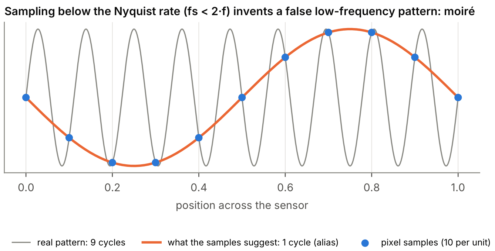
The Nyquist–Shannon sampling theorem says a signal can be reconstructed from samples only if it contains no frequencies above half the sampling rate. Pixels sample space; a pattern finer than two pixels per cycle cannot be represented and instead appears as a false, coarser pattern: aliasing. In images this is moiré on fences, grilles, tiled walls and distant cobblestones, and in Bayer sensors it produces false colour because each colour channel is sampled even more sparsely. The lens itself acts as a low-pass filter (its MTF falls at high frequencies), and some cameras add an optical low-pass filter. Downscaling an image without blurring first creates aliasing for the same reason, which is why proper image pyramids filter before decimating.
Convolution: the universal filter
Convolution slides a small weighted window (a kernel) over the image and replaces each pixel with the weighted sum of its neighbourhood. A box or Gaussian kernel blurs and reduces noise; a difference kernel finds edges (Sobel, Chapter 7); a centre-positive, surround-negative kernel sharpens. Convolution is linear and shift-invariant, which makes it predictable, analysable and hardware-friendly.
Separability: the Gaussian kernel is an outer product \([1\;2\;1]^{\top}\,[1\;2\;1]\), so it can be applied as a vertical then a horizontal 1D pass. A 7×7 filter drops from 49 to 14 multiplies per pixel.
The cost adds up quickly. A single 3×3 filter on a 2-megapixel image at 30 frames per second is about half a billion multiply-adds per second, per camera. That is why ISPs implement filters in dedicated hardware, why separable and recursive formulations matter, and why CNNs are dominated by convolution: a CNN layer is a bank of learned convolution kernels followed by a non-linearity. Edge-preserving filters such as the bilateral and guided filters weight neighbours by both distance and intensity similarity, smoothing noise without smearing edges; they are non-linear and therefore more expensive.
The Fourier view: images as frequencies
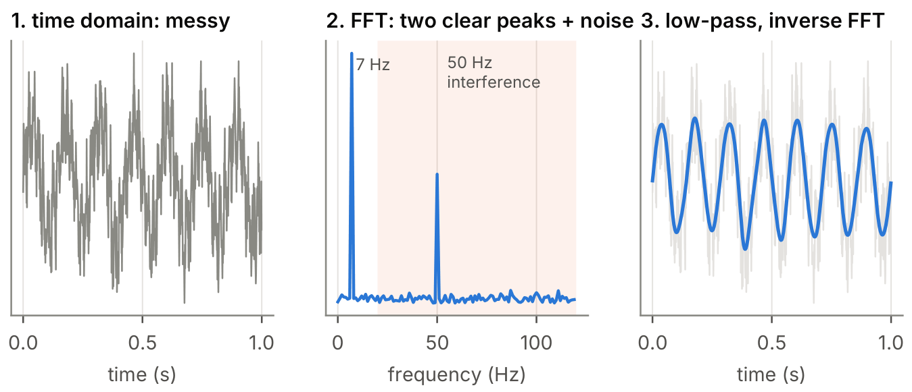
Any signal can be written as a sum of sine waves of different frequencies. The Fourier transform computes how much of each frequency is present; the FFT computes it in n log n operations instead of n². In images, low frequencies are smooth gradual changes (sky, road surface), high frequencies are fine detail, edges and noise. Two facts make the Fourier view powerful. First, the convolution theorem: convolution in space equals multiplication in frequency, so a filter can be understood by its frequency response (a blur is a lowpass filter; sharpening boosts high frequencies, and noise with them). Second, many imaging properties are naturally frequency-domain quantities.
The most important of these is the MTF (modulation transfer function), the standard measure of camera sharpness: how much contrast survives at each spatial frequency through lens, sensor and processing. It is measured with the slanted-edge method (ISO 12233), reported as MTF50 or contrast at a specified linepairs-per-millimetre, and used in camera module EOL testing and for specifying lenses across temperature. The same frequency thinking explains why a perception network trained on sharp images degrades with a softer lens or more aggressive denoising.
The ISP: signal processing in silicon
The image signal processor converts raw sensor data into an image. Each stage is a well-defined piece of mathematics, mostly implemented in fixed-point hardware:
Subtract offset; decompand PWL HDR data via LUT.
Replace hot pixels; correct lens vignetting with a gain map.
Interpolate full RGB from the Bayer (or RCCB / RGB- IR) mosaic.
Per-channel gains, then 3×3 colour matrix.
Spatial and temporal, strength driven by the noise model.
Compress 120+ dB into display or network range.
Edge enhancement, scaling, colour space (YUV) conversion.
An important architectural point: the best image for a human is not the best image for a network. Sharpening halos, aggressive denoising and local tone mapping look pleasant on a display but can alter the statistics a CNN learned from. Many systems therefore run two ISP outputs (or two tunings) from the same sensor: one for viewing (surround view, rear camera display) and one for machine vision. Any ISP tuning change is effectively a change to the perception input distribution and should trigger re-validation.
HDR and companding
Automotive scenes span tunnel exits, low sun and headlights at night: often well over 100 dB of dynamic range (a factor of more than 100 000 between brightest and darkest). Sensors reach this with multiple exposures, split pixels with different sensitivities, or overflow capacitors, then merge to a linear value of 20–24 bits. To save interface bandwidth the result is companded with a piecewise-linear curve to 12–16 bits, keeping fine steps in the shadows and coarse steps in the highlights, which matches the shot-noise behaviour (Chapter 8): bright values are noisier anyway, so they do not need fine quantisation. The ISP decompands with a lookup table.
Sampling in time: flicker and rolling shutter
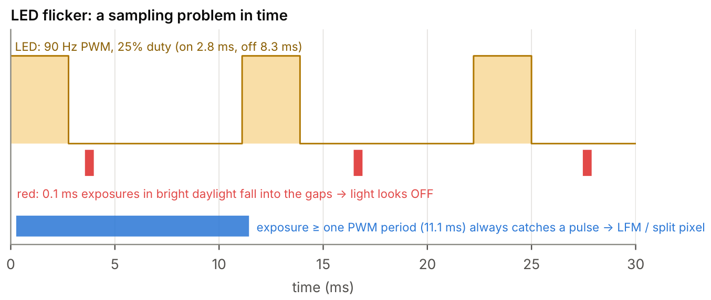
LED flicker is aliasing in time. LEDs in traffic lights, signs and vehicle lamps are driven with pulse-width modulation, often from around 90 Hz to several hundred hertz. In bright light the exposure time can be a fraction of a millisecond, shorter than the LED's off-phase. The light may then appear off, partially lit or flickering between frames, which can make traffic light or brake light recognition fail. Remedies include LED flicker mitigation (LFM) pixels and split-pixel sensors that integrate a low-sensitivity channel over a full PWM period, combined with HDR merging that prefers the flicker-free channel.
Rolling shutter is another time-sampling effect. CMOS sensors read rows one after another, so the top and bottom of an image are captured at different moments, often 10–30 ms apart. Fast lateral motion or ego rotation skews vertical structures: a pole crossing the image at 50 km/h, 10 m away, can lean by tens of pixels. For accurate geometry, each row needs its own timestamp and pose, interpolated from odometry or an IMU (slerp, Chapter 6). Motion blur, by contrast, is the integral of the scene over the exposure time and grows with exposure, which is why night images trade noise against blur.
Filtering in time
Many vehicle signals used alongside vision (yaw rate, wheel speed, detection confidence) are smoothed with temporal filters. A moving average (FIR) and an exponential smoother (simplest IIR, y = αx + (1−α)yprev ) both remove noise at the cost of delay. Every causal low-pass filter introduces lag, and in a braking function lag is distance. Choosing a filter is choosing a point on the noise-versus-latency curve; the Kalman filter makes that choice explicitly from noise models instead of by hand.
"A camera samples the world in space and in time. If the world changes faster than we sample, we see things that aren't there: moiré patterns in space, flickering traffic lights in time. The ISP is a chain of signal-processing steps, and it should be tuned for the network, not only for human eyes."
11Numerical precision
Mathematics assumes real numbers with infinite precision. Computers store a fixed number of bits. The gap between the two is small, predictable and usually harmless — until it is not. Understanding it is what separates an algorithm that works in Python from one that works on the target for 15 years.
How floating point works
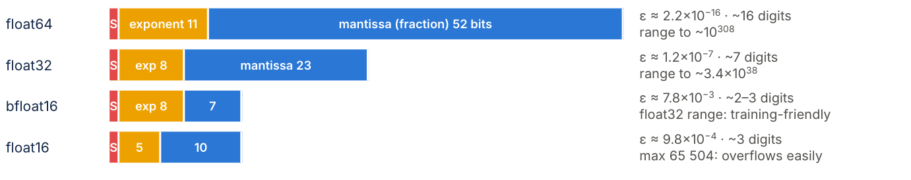
A floating-point number is scientific notation in binary: a sign, an exponent that sets the scale, and a mantissa that holds the significant digits. The consequence is constant relative precision: float32 always has about 7 significant decimal digits, whether the number is 0.001 or 1 000 000. The machine epsilon ε is the relative gap between 1 and the next representable number. Absolute precision therefore gets worse as numbers get bigger:
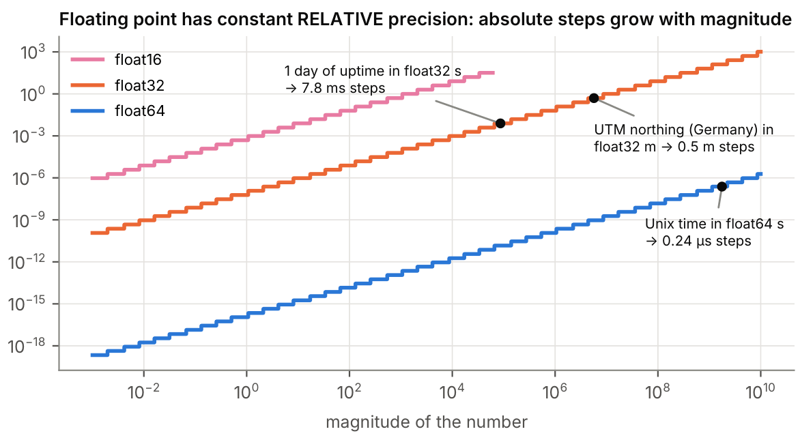
Store timestamps as 64-bit integers (microseconds or nanoseconds) and convert to float only for differences. Express positions relative to a local origin (the vehicle, or a recent map anchor) rather than in global coordinates. Compute camera-to-vehicle geometry in metres around the vehicle, not in world coordinates. These rules cost nothing and eliminate a whole class of slowly appearing field issues.
Rounding, cancellation and absorption
Most decimal fractions are not exactly representable in binary: 0.1 + 0.2 in double precision gives 0.30000000000000004 , so never compare floats with ==; use a tolerance that combines a relative and an absolute part. Two effects matter more in practice:
- Absorption: adding a small number to a large one can do nothing at all. In float32,
108 + 1 − 108evaluates to0. Accumulating millions of small values (summing pixel statistics, integrating odometry) into a large running total silently loses information. Remedies: accumulate in double, use pairwise or Kahan summation, or reset accumulators periodically. - Catastrophic cancellation: subtracting two nearly equal numbers leaves only their noisy low digits. The textbook variance formula
E[x²] − E[x]²fails this way for data with a large mean (pixel values near saturation, timestamps); Welford's online algorithm computes the same quantity stably. Rewriting formulas to avoid subtracting large similar quantities is a core numerical skill.
Conditioning and stability
Two separate questions decide whether a numerical result can be trusted. Conditioning is a property of the problem: how much do small input changes move the exact answer? It is measured by the condition number κ, and the rule of thumb is that you lose about log10κ decimal digits. With κ = 106, float32's 7 digits leave one correct digit. Stability is a property of the algorithm: does it add more error than the problem's conditioning forces? Solving least squares via the normal equations squares the condition number (κ(ATA) = κ(A)²), while QR does not. Hartley normalisation (Chapter 4) improved a homography problem's conditioning from 6.3×106 to 3.4. Good scaling of units and coordinates is often worth more than switching to double precision.
Special values and edge cases
IEEE 754 defines infinity (overflow, division by zero) and NaN (undefined results like 0/0 or √−1). NaN propagates silently through every later operation and compares unequal even to itself, so a single bad input can corrupt a whole track or calibration without any crash. Typical sources in vision: projecting a point behind the camera (z ≤ 0, or z = 0 exactly at the camera plane), acos of a dot product that rounding pushed to 1.0000001, normalising a zero-length vector, or a fisheye model evaluated outside its valid angle. Clamp inputs to valid domains, check projection depth explicitly, and assert finiteness at module boundaries. Also watch for denormal numbers (extremely small values) which are dramatically slower on some processors; real-time code often enables flush-to-zero mode.
Fixed point: integers pretending to be fractions
ISPs, DSPs, FPGAs and many microcontrollers compute in fixed point: an integer with an implied binary point. In Q-format notation, a signed 16-bit Q1.15 (often just Q15) value has 15 fractional bits and covers [−1, 1) in steps of 2−15; a Q8.8 value covers [−128, 128) in steps of 1/256. Fixed point is fast, small, power-efficient and bit-exactly deterministic, but the engineer must manage the range manually: choose the format for each signal, track how multiplication doubles the number of fractional bits, decide on rounding versus truncation, and saturate instead of wrapping on overflow (a wrapped value turns a bright pixel black). Colour correction matrices, gain maps, gamma LUTs and filter coefficients in an ISP are all specified in such formats, and tuning tools must quantise coefficients exactly as the hardware does.
INT8 quantization for neural networks
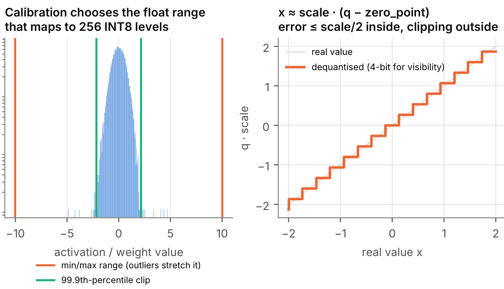
Automotive NPUs run networks in 8-bit (sometimes 4- or 16-bit) integer arithmetic because it is several times cheaper in power, memory bandwidth and silicon area than float32. Each tensor is mapped with a scale and zero-point: x ≈ scale · (q − zero_point) . Post-training quantization chooses the scales from a calibration data set; quantization-aware training simulates the rounding during training so the network learns to tolerate it. Per-channel scales for weights typically preserve accuracy much better than one scale per tensor. The quantised model is a different model: its accuracy must be measured, not assumed, and the calibration data must represent the operating domain (night, rain, low sun), otherwise rare but important conditions get clipped.
Determinism and reproducibility
Floating-point addition is not associative: (a + b) + c can differ from a + (b + c) in the last bits. Compilers that use fused multiply-add (FMA), SIMD vectorisation that changes summation order, -ffast-math optimisations, different math libraries, multithreaded reductions and GPU/NPU kernels all reorder operations. The same code can therefore produce slightly different results on a PC and on the target. The practical consequence is a testing strategy: compare target output against a reference with well-reasoned tolerances (absolute and relative, per output), track error statistics rather than single values, and reserve bit-exact comparison for fixed-point paths where it is achievable. For safety-related software, document which compiler flags are allowed and why.
"Computers keep about seven significant digits in single precision. That is plenty for camera geometry around the car, but not for timestamps or global coordinates, so we store those differently. On the embedded side, ISPs work in fixed point and networks in 8-bit integers, and every precision reduction is a design decision that we verify against a reference."
12The software toolbox
The mathematics reaches the car through libraries. A typical team prototypes in Python with NumPy, SciPy, OpenCV and PyTorch, implements production code in C++ with Eigen and OpenCV, and deploys onto accelerators through vendor toolchains. Knowing each tool's design explains both its speed and its traps.
Python, Jupyter: NumPy, SciPy, OpenCV-Python, PyTorch. Fast iteration, float64 by default.
Freeze golden inputs and outputs; recorded drives; KPI scripts. The prototype becomes the oracle.
Eigen, OpenCV, Ceres. Float32, fixed sizes, no heap in the loop. SIL tests vs reference.
ARM NEON, DSP, ISP and warp HW, NPU via vendor compiler (ONNX in, INT8 out). HIL tests vs reference.
Tolerance-based comparison, KPI on recorded data, resimulation, statistics.
Eigen: linear algebra for production C++
Eigen is a header-only C++ template library for matrices, vectors, decompositions and geometry. It is the de facto standard in robotics and automotive C++ and sits underneath Ceres, GTSAM, many SLAM systems and a lot of in-house code. It is distributed under the MPL 2.0 licence, which product teams generally find compatible with closed-source use (confirm with your legal function). Four design ideas explain how to use it well:
Fixed versus dynamic size. Matrix3f , Vector4d or Matrix<float,2,6> have their size known at compile time. They live on the stack, need no heap allocation, and the compiler can unroll and vectorise every operation. MatrixXf sizes are runtime values and allocate on the heap. For the many small matrices in geometry (poses, Jacobians, 3×3 covariances), fixed sizes are faster and real-time safe. Eigen can enforce this: EI‐ GEN_RUNTIME_NO_MALLOC with set_is_malloc_allowed(false) asserts if anything allocates in a section that must not.
Expression templates and lazy evaluation. a = b + c + d; does not create temporaries; Eigen builds an expression object and evaluates it in a single fused loop on assignment. This is the source of its speed and of two traps. First, auto x = b + c; stores the expression, not the result, and can reference destroyed temporaries; assign to an explicit matrix type or call .eval() . Second, aliasing: a = a.transpose(); reads and writes the same memory; use transposeInPlace() . Matrix products are assumed to alias by default (safe); use .noalias() when you know they don't, for speed.
Column-major storage by default. Eigen stores matrices column by column, like Fortran and MATLAB. NumPy and OpenCV store row by row. Copying raw buffers between them without care transposes your data silently. Use Eigen::Map with an explicit RowMajor type, or cv::cv2eigen , when interfacing.
A decomposition for every job. Choose based on matrix properties and the speed/robustness trade-off:
| Eigen class | Use when | Notes | ||||
|---|---|---|---|---|---|---|
LLT , LDLT | Symmetric positive (semi-)definite: normal equations, covariances | Fastest. LDLT tolerates semi-definite matrices better | ||||
PartialPivLU | General square, invertible | Fast, good default for square solves | ||||
HouseholderQR / ColPivHouseholderQR | Least squares | Column pivoting adds rank-revealing robustness | ||||
JacobiSVD / BDCSVD | DLT, rank, nearest rotation, condition number | Jacobi: very accurate for small matrices; BDC: faster for large |
SelfAdjointEigenSolver | Symmetric eigenproblems: PCA, plane fit, covariance axes | Has a closed-form computeDirect for 2×2 and 3×3 | ||||
Sparse: SimplicialLDLT , SparseQR , ConjugateGradient | Large structured problems | Bundle adjustment, smoothing, graph optimization |
The Geometry module provides Quaternionf , AngleAxisf , Isometry3f (rigid transform with an efficient inverse), Hyperplane and umeyama (the SVD-based point-set alignment from Chapter 4). In safety-related projects, using a large template library raises questions about MISRA/AUTOSAR C++ guideline deviations and qualification evidence; teams typically restrict themselves to a documented subset, wrap it, test it at the unit level, or implement small fixed-size routines in-house for the safety-critical path.
NumPy: arrays for Python
NumPy's ndarray is a block of typed memory with a shape and strides. Its central idea is vectorisation: express an operation on whole arrays so that the loop runs in compiled C instead of the Python interpreter. Projecting a million points with one matrix product instead of a Python loop is typically 10–100 times faster. Broadcasting lets arrays of compatible shapes combine without copies: subtracting a (3,) mean from an (N, 3) point array just works. np.einsum expresses batched products compactly (e.g. applying N different rotations to N points). np.linalg wraps LAPACK for solves, decompositions and norms.
NumPy defaults to float64 while the target runs float32 or less, so a reference that is "too good" hides precision problems; run the reference in the target's precision as well. Slicing returns views, not copies, so modifying a slice modifies the original. Integer arrays (e.g. uint8 images) wrap around on overflow: 200 + 100 becomes 44 in uint8; cast before arithmetic. Image arrays are indexed [row, col] = [y, x] , the opposite of the (x, y) order of points.
SciPy: the algorithms on top
SciPy builds numerical algorithms on NumPy arrays. The parts a vision engineer uses most:
scipy.optimize.least_squares: nonlinear least squares with trust-region or Levenberg–Marquardt solvers, robust losses (huber,soft_l1,cauchy), bounds, and ajac_sparsityargument for large sparse problems. Ideal for prototyping a calibration or pose refinement before writing Ceres code. (Thelmmethod does not support robust losses or bounds.)scipy.spatial.transform.Rotation: conversions between quaternions, matrices, rotation vectors and Euler angles with explicit axis orders, plusSlerpand rotation averaging. Note the scalar-last quaternion default.scipy.signal: filter design (Butterworth, FIR), zero-phase offline filtering (filtfilt), spectra (welch) for analysing vibration or flicker in recorded signals.scipy.ndimage,scipy.interpolate,scipy.sparse,scipy.stats: image filtering and morphology, LUT and spline interpolation, sparse linear algebra, distributions and statistical tests for KPI analysis.
least_squares on a real problem, compared with Ceres, is in Chapter 19.
The rest of the stack
| Tool | What it provides |
|---|---|
| OpenCV | calib3d (camera calibration, fisheye module, solvePnP, findHomography with RANSAC/USAC, stereo), image processing, remap for undistortion LUTs. cv::Mat is row-major; colour images default to BGR order; rotations appear as Rodrigues vectors. |
| Ceres Solver | Industrial nonlinear least squares with automatic differentiation, robust losses, manifolds for rotations, sparse solvers. Common for calibration and bundle adjustment. |
| GTSAM, g2o | Factor-graph and graph optimization for SLAM, multi-sensor fusion and smoothing. |
| Sophus, manif | Lie-group types (SO3, SE3) with exponential and logarithm maps and Jacobians, on top of Eigen. |
| PyTorch, ONNX | Training with automatic differentiation; ONNX as the exchange format into vendor NPU compilers that quantise and schedule the network. |
| BLAS / LAPACK, Arm | Optimised low-level kernels that NumPy and others call; on Arm targets, NEON-optimised |
| compute libraries | routines for vision and linear algebra. |
The conversion checklist
Most integration bugs between these tools come from a short list of mismatched conventions. Check each one explicitly at every interface:
| Topic | The usual mismatch | ||
|---|---|---|---|
| Memory order | Eigen column-major vs NumPy / OpenCV row-major | ||
| Quaternion order | w-first (Eigen constructor, papers) vs w-last (Eigen coeffs() , SciPy, ROS) | ||
| Quaternion algebra | Hamilton vs JPL multiplication convention | ||
| Transform direction | Ta←b vs Tb←a; active vs passive rotation | ||
| Axis conventions | Vehicle z-up (ISO 8855) vs camera optical y-down; image v-down | ||
| Euler angles | Axis order (ZYX vs XYZ), intrinsic vs extrinsic, degrees vs radians | ||
| Pixel coordinates | Pixel centre at integer (0,0) or at (0.5, 0.5); [row, col] vs (x, y) | ||
| Colour | RGB vs BGR; linear vs gamma-encoded values; full vs limited range YUV | ||
| Precision | float64 reference vs float32 / fixed point / INT8 target |
"We prototype in Python because it is fast to change and becomes our reference, then implement in C++ with Eigen because fixed-size, allocation-free linear algebra is what an embedded real-time system needs. Most integration bugs are convention mismatches — memory order, quaternion order, frame direction — so we test those explicitly at every interface."
13A pixel's journey
To see how the pieces connect, follow one parking-line corner from the moment its light enters a surround-view camera to the moment the vehicle steers into the slot. Every chapter of this guide appears along the way.
- Photons become numbers Ch. 8
Light from a white paint corner reaches the side-mirror fisheye at dusk. The pixel collects a few hundred electrons; shot noise is √S, read noise adds a few more. The sensor captures several exposures for HDR and compands them with a piecewise-linear curve. PWM street lighting nearby is handled by the LFM-capable split pixel.
Ch. 10 - The ISP makes an image Ch. 10
Fixed-point hardware decompands with a LUT, subtracts black level, corrects lens shading, demosaics, applies white-balance gains and a 3×3 colour matrix, then denoises with a strength picked from the gain-dependent noise model. The machine-vision output skips heavy sharpening.
Ch. 2Ch. 11 - Fisheye to bird's-eye view Ch. 5
A precomputed warp mesh combines the Kannala–Brandt lens model, the camera's extrinsic rotation (stored as a quaternion, specified to the customer as yaw/pitch/roll) and the ground-plane homography. The warp engine samples the input with bilinear interpolation. The mesh was generated in float32 relative to the vehicle origin, so its precision is well below a pixel.
Ch. 6Ch. 11 - Calibration made that possible Ch. 4
At end of line, floor targets gave a DLT homography (SVD on Hartley-normalised points), then PnP plus Levenberg–Marquardt refined the pose by minimising reprojection error. Since then, online calibration has tracked a small pitch change from the loaded boot, because the Jacobian analysis showed that one degree is worth metres at range.
Ch. 9Ch. 7 - A network finds the corner Ch. 10
A CNN running in INT8 on the NPU detects slot corners and entry lines in the top view. Its convolutional filters were learned with Adam on labelled data; quantization-aware training kept the INT8 accuracy within the agreed tolerance of the float model, verified on night and rain subsets.
Ch. 9Ch. 11 - Geometry from detections Ch. 8
Corner points from the network and line segments are fitted with RANSAC plus least squares to reject a shadow edge. The slot orientation comes from the principal direction (eigenvector) of the line points. The slot is now a rectangle in metres in the vehicle frame.
Ch. 2Ch. 3 - Tracking while the car moves Ch. 8
Wheel odometry and yaw rate are integrated between frames to predict where the slot should be. An EKF fuses each new detection with the prediction, using Mahalanobis gating to reject a mismatched slot from a neighbouring camera. When the slot leaves the field of view, the prediction alone carries it, with growing covariance.
Ch. 7Ch. 6 - Decision and proof Ch. 9
A path planner optimises a trajectory into the slot. Before release, the slot detector was evaluated with precision, recall and corner position error on thousands of recorded slots, and the "no false slot into an obstacle" claim was supported with confidence bounds from fleet kilometres and simulated scenarios.
Ch. 8
When this system misbehaves in the field, the symptom ("the slot jumps", "the overlay is offset", "the car parks crooked") rarely points directly at the cause. A team that can reason across the whole chain — noise, ISP, lens model, calibration, network, fitting, filtering, precision — finds root causes in days instead of months.
14Distributions and probability puzzles
Chapter 8 used the Gaussian for noise. Many quantities in a camera product are not sums of small errors but counts of rare events, waiting times between failures or rounding errors, and each of those has its own distribution. Knowing a handful of them, and how they are related, turns many "how likely is…" questions into one line of arithmetic.
Why a handful of distributions is enough
A distribution is a model of how a random quantity spreads. Choosing the right one is not a matter of taste: it follows from how the quantity is produced. If you count how many of \(n\) independent frames contain a missed pedestrian, each frame is a coin flip with a small probability, and the count is binomial. If you count events that happen at random moments in continuous time, such as false brake alarms per hour of driving or photons per exposure, the count is Poisson, and the time between two events is exponential. If a value is rounded to a grid, the rounding error is uniform. If many small independent effects add up, the sum is Gaussian (the central limit theorem of Chapter 8). And if a process occasionally produces wild values, such as feature matches on repeated structures, the tails are heavy, which is the reason robust losses exist (Chapter 9).
| Distribution | Models | Mean; variance | Where it appears |
|---|---|---|---|
| Bernoulli(\(p\)) | One yes/no trial | \(p\); \(p(1-p)\) | Is this object detected? |
| Binomial(\(n, p\)) | Successes in \(n\) independent trials | \(np\); \(np(1-p)\) | Misses in a test set, recall error bars |
| Poisson(\(\lambda\)) | Count of rare events in a window | \(\lambda\); \(\lambda\) | Photon shot noise, false alarms per hour, defects per wafer |
| Geometric(\(p\)) | Trials until the first success | \(1/p\); \((1-p)/p^2\) | Retries, RANSAC iterations until a clean sample |
| Exponential(\(\lambda\)) | Waiting time between Poisson events | \(1/\lambda\); \(1/\lambda^2\) | Time between failures, packet inter-arrival times |
| Uniform(\(a, b\)) | No preferred value in an interval | \((a+b)/2\); \((b-a)^2/12\) | Quantization error, random phase, random sampling |
| Gaussian(\(\mu, \sigma^2\)) | Sum of many small effects | \(\mu\); \(\sigma^2\) | Read noise, calibration residuals, Kalman states |
| Student-t, Cauchy | Gaussian with occasional wild values | heavy tails (Cauchy has no mean) | Residuals with outliers; robust losses are their negative log-likelihoods |
The family is connected, and the connections are worth more than the formulas. A binomial with many trials and a small probability becomes a Poisson with \(\lambda = np\): 100 000 frames with a miss probability of \(2\times10^{-5}\) give binomial and Poisson(2) probabilities that agree to four decimals for every count. Events that arrive as a Poisson process have exponential gaps. The geometric distribution is the discrete cousin of the exponential. And a binomial, a Poisson with large \(\lambda\) and a sum of uniforms all approach the Gaussian, which is why the normal approximation works for large counts and fails for the small counts that safety arguments are about.
Counting rare events: binomial and Poisson
Imagine logging an emergency-braking function on public roads and recording every false alarm. False alarms are triggered by rare coincidences (a manhole cover at the wrong angle, a reflection), so they arrive at random moments with a roughly constant average rate \(\lambda\) per hour. Three assumptions define a Poisson process: events are independent, two events never happen at exactly the same instant, and the rate does not change over the period considered. From those alone it follows that the number of events \(k\) in a window of length \(t\) is Poisson distributed and the gap between events is exponential:
\[ P(k) = \frac{(\lambda t)^k e^{-\lambda t}}{k!}, \qquad P(\text{gap} > s) = e^{-\lambda s} \]The figure carries the most useful intuition: random events look clumpy. People expect them to be evenly spaced and read clusters as causes. A test driver who sees three false alarms in one hour and none in the next eight has not necessarily found a bad road; at 0.5 alarms per hour that pattern is ordinary. The second property is that the variance of a Poisson count equals its mean. The spread of 100 expected events is \(\sqrt{100} = 10\), so a measured 85 or 115 is unremarkable, while 0 instead of the expected 2 happens with probability \(e^{-2} = 13.5\%\). This is the same square-root law that makes photon shot noise grow as \(\sqrt{S}\) (Chapter 8): photons are Poisson events too.
The binomial is the right model when the number of opportunities is fixed and countable: 2 000 pedestrians in a test set, each detected or missed. Its standard deviation \(\sqrt{np(1-p)}\) gives the familiar error bar on a recall (Chapter 16). When \(n\) is large and \(p\) small the two models agree, and the Poisson is easier to compute and to reason with.
Both models assume independence. Frames of the same drive are not independent: if a pedestrian in dark clothing is missed in one frame, the next 30 frames of the same scene are likely to be missed too. Counting those as 31 independent misses overstates the information in the data and understates the error bar. Count events (tracks, scenes, drives) or use the methods of Chapter 16.
Waiting times: the exponential and memorylessness
Hardware reliability uses the same model in the time domain. A component with a constant failure rate \(\lambda\) survives a time \(t\) with probability \(e^{-\lambda t}\), and its mean time to failure is \(1/\lambda\). Rates are quoted in FIT, failures per \(10^9\) device hours, which is the unit of the FMEDA in Functional safety 5.4. The numbers look tiny until they are multiplied by a fleet: 100 000 vehicles driving 500 hours a year with a 100 FIT part produce on average \(10^5 \times 500 \times 10^{-7} = 5\) failures per year, and the probability of at least one is 99.3%. A single unit with \(\lambda = 10^{-5}\)/h survives 10 000 hours with probability \(e^{-0.1} = 90.5\%\).
The exponential is the only continuous distribution without memory: \(P(T > s + t \mid T > s) = P(T > t)\). A part that has survived 5 years is as good as new under this model. That sounds absurd and is often wrong for wear-out (connectors, electrolytic capacitors, image sensors under heat), which is why reliability engineers use the "bathtub curve": early failures, a flat random-failure period where the exponential holds, and wear-out at the end. Memorylessness is the reason the constant-rate model is so convenient, and also the first assumption to challenge in a review.
The Poisson count and the exponential gap give two equivalent ways to state a test result. "No false alarm in 10 000 km" is a Poisson count of zero; it is also a waiting time of at least 10 000 km. Both lead to the same bound, \(\lambda < 3/10\,000\) km at 95% confidence, because \(e^{-\lambda N} = 0.05\) gives \(\lambda N = \ln 20 = 3.0\). That number is the "rule of three" of Chapter 8.
Uniform: rounding errors and random sampling
When a continuous value is rounded to a grid of step \(\Delta\), and the value is busy enough that it does not prefer any position between grid points, the rounding error is uniform on \([-\Delta/2, \Delta/2]\). Its variance is \(\Delta^2/12\), so its RMS is \(\Delta/\sqrt{12} \approx 0.29\,\Delta\). For an 8-bit pixel scaled to \([0, 1]\), \(\Delta = 1/255\) and the RMS rounding error is 0.0011. For a full-scale sine wave this gives the classic signal-to-quantization-noise ratio of \(6.02N + 1.76\) dB for \(N\) bits, about 50 dB at 8 bits: every extra bit buys 6 dB. Chapter 11 and Edge AI 5.2 use this when they budget INT8 errors.
The "busy enough" condition matters. A smooth sky gradient that changes by less than one step over many pixels does not produce uniform, independent errors; it produces visible bands. Dithering adds a little noise before rounding precisely to make the error uniform and uncorrelated with the signal, trading a slightly higher noise floor for the removal of structured artefacts. Uniform distributions also appear whenever something has no preferred value: the phase of an LED's PWM relative to the exposure (Chapter 10), or the position of a random crop in data augmentation.
Seven puzzles that train intuition
Probability puzzles are worth practising because each one isolates a reasoning error that also appears in engineering. The numbers below come from the experiment scripts of this chapter.
1. The complement trick: "at least one"
A detector has a false-positive probability of \(10^{-5}\) per frame. How likely is at least one false positive in an hour at 30 fps? Counting all the ways to get one or more is hard; the complement, zero false positives in 108 000 frames, is easy: \(1 - (1 - 10^{-5})^{108\,000} = 66\%\). The expected number is 1.08. Tiny per-frame rates become near-certainties at frame rate, which is why per-frame metrics must be translated into per-hour or per-km rates before anyone judges them, and why temporal confirmation (requiring several consecutive frames) is so effective.
2. The birthday problem: collisions come early
With 23 people the chance that two share a birthday is 50.7%, because 23 people form 253 pairs. The approximation \(P \approx 1 - e^{-n^2/2N}\) for \(n\) items in \(N\) slots applies to engineering directly: random 16-bit object IDs collide with 50% probability among only 300 tracked objects; random 32-bit IDs reach 50% at 77 000 items, and 10 000 items already give 1.2%. Hash tables, random frame tags and randomly generated identifiers need either far more bits than intuition suggests or a collision check.
3. The coupon collector: the last class is the expensive one
If a scene is one of 20 equally likely classes, how many random scenes do you need to see every class at least once? The answer is \(20 \cdot H_{20} = 20(1 + \tfrac12 + \dots + \tfrac1{20}) \approx 72\), not 20: the first new class is free, the last one takes 20 tries on average. With one rare class at 1% the average rises to about 122 in simulation. Random data collection is efficient for common conditions and hopeless for rare ones, which is the statistical argument for targeted collection and scenario-based testing.
4. The geometric wait: \(1/p\) tries
If each attempt succeeds with probability \(p\), the expected number of attempts is \(1/p\). A RANSAC sample is clean with probability \((1-\varepsilon)^s\); at 50% outliers and a 4-point homography that is 1/16, so 16 samples are needed on average and many more for 99% confidence (Chapter 8).
5. Monty Hall: information changes probabilities
A prize is behind one of three doors. You pick one; the host, who knows where the prize is, opens another door that has no prize and offers a switch. Switching wins with probability 2/3 (66.6% in 100 000 simulated games): your first pick is right with probability 1/3, and the host's informed choice concentrates the remaining 2/3 on the one closed door. The general lesson is that the process that produced the evidence matters, not just the evidence. A detection that survived a hand-picked review set says something different from one sampled at random.
6. Simpson's paradox: better in every slice, worse overall
Model A finds 950 of 1 000 pedestrians by day (95.0%) and 60 of 100 at night (60%), 91.8% overall. Model B finds 192 of 200 by day (96.0%) and 558 of 900 at night (62.0%): better in both slices, yet 68.2% overall, because B's test set is mostly the hard night slice. Aggregate metrics mix performance with the composition of the test set. Compare models on the same set, report per-slice numbers, and weight slices by how often they occur in the operational design domain.
7. Regression to the mean: the worst slice improves by itself
Evaluate 30 slices of 150 objects each, all with a true recall of 90%. The worst slice measures 84.7% on average, purely from sampling noise. Re-evaluate the same slice with new data and it measures 90.0% again, without any change to the model. A team that "fixes" its worst slice and sees an improvement may be watching noise revert; confirm with fresh data and compare against an untouched control.
"Most reliability questions are counting questions. Rare independent events are Poisson, so their spread is the square root of the count and they arrive in clumps. A tiny per-frame rate becomes a near-certainty per hour. And before we celebrate an improvement on our worst slice, we check that it is not just regression to the mean."
15Information theory: entropy, cross-entropy and KL divergence
Every classification network is trained by minimising cross-entropy, INT8 calibrators choose clipping ranges with KL divergence, and camera-to-lidar calibration can maximise mutual information. All three come from one idea: measuring information as surprise.
Surprise and entropy
Claude Shannon (Landmark papers 3.1) asked how many bits are needed, on average, to transmit messages from a source. His answer starts with the surprise of a single outcome, \(-\log_2 p\) bits: a fair coin flip carries 1 bit, an outcome with probability 1/8 carries 3 bits, an outcome that was certain carries none. The logarithm makes surprises of independent events add up, just as their probabilities multiply. Entropy is the average surprise of a source:
\[ H(p) = -\sum_i p_i \log_2 p_i \]Entropy is maximal when all outcomes are equally likely (\(\log_2 3 = 1.585\) bits for three classes) and zero when one outcome is certain. A dataset whose labels are 70% car, 20% pedestrian and 10% cyclist has an entropy of 1.16 bits: less than uniform, because the labels are partly predictable. In practice entropy appears in three roles: as the limit of lossless compression (no coder can beat \(H\) bits per symbol on average, which is why entropy coding is the last stage of every video codec), as a measure of a network's uncertainty (the entropy of its softmax output), and as the building block of cross-entropy and KL divergence. With natural logarithms the unit is the nat; 1 nat = 1.443 bits. Training frameworks use nats.
Cross-entropy: the classification loss
Suppose the true distribution of labels is \(y\) and a model predicts \(p\). If you encoded outcomes drawn from \(y\) with a code optimised for \(p\), the average length would be the cross-entropy
\[ H(y, p) = -\sum_i y_i \log p_i \]For a one-hot label (the object is class \(c\)) only one term survives and the loss is simply \(-\log p_c\), the surprise the model feels at the right answer. A network outputs raw scores (logits) \(z\); the softmax turns them into probabilities, \(p_i = e^{z_i} / \sum_j e^{z_j}\).
Worked example. Three classes (car, pedestrian, cyclist), logits \(z = (2.0, 1.0, 0.1)\). The exponentials are 7.39, 2.72 and 1.11, which sum to 11.21, so \(p = (0.659, 0.242, 0.099)\). If the object really is a car, the loss is \(-\ln 0.659 = 0.417\) nats (0.60 bits). If it is a cyclist, the loss is \(-\ln 0.099 = 2.317\) nats: being confidently wrong is expensive. The gradient of the loss with respect to the logits is strikingly simple, \(\partial L / \partial z = p - y = (-0.341, 0.242, 0.099)\): raise the true logit by what is missing from its probability, lower each wrong logit by its own probability. This clean gradient is the main reason softmax and cross-entropy are always used together, and the derivation is one application of the chain rule (Chapter 18).
Why not train classification with a squared error on the probabilities? With a sigmoid or softmax output, the squared-error gradient contains the derivative of the softmax, which is nearly zero when the model is confidently wrong. The model learns slowest exactly when it is most wrong. Cross-entropy cancels that factor, so the gradient stays \(p - y\) however saturated the output is. There is also a statistical reason: minimising cross-entropy is maximum-likelihood estimation for a categorical model, just as minimising squared error is maximum likelihood for Gaussian noise (Chapter 9).
Two practical variations follow directly from the formula. Label smoothing replaces the one-hot target with, for example, \((0.933, 0.033, 0.033)\) for \(\varepsilon = 0.1\); the best achievable loss is then the entropy of that target, 0.29 nats, not zero, so the network is never pushed towards infinite logits and its confidences stay better calibrated (NN training 4.3). Focal loss multiplies the loss by \((1 - p_c)^\gamma\), down-weighting the many easy background examples of a detector. The loss itself and its use in training are covered in NN training 3.1.
KL divergence: the extra cost of the wrong model
Cross-entropy splits into two parts: \(H(y, p) = H(y) + D_{KL}(y \,\|\, p)\). The first is the irreducible uncertainty of the data; the second, the Kullback–Leibler divergence, is the extra cost of using \(p\) instead of the truth:
\[ D_{KL}(p \,\|\, q) = \sum_i p_i \log \frac{p_i}{q_i} \;\ge 0 \]It is zero only when the two distributions are identical. Because \(H(y)\) does not depend on the model, minimising cross-entropy and minimising KL divergence are the same thing during training. KL is not a distance: it is not symmetric. For \(a = (0.7, 0.2, 0.1)\) and \(b = (0.4, 0.4, 0.2)\), \(D_{KL}(a\|b) = 0.184\) nats but \(D_{KL}(b\|a) = 0.192\). The asymmetry has a visible consequence when a simple model is fitted to a complex distribution.
"Mass-covering" forward KL is what maximum-likelihood training does: the model must explain every training sample, so it hedges and blurs. "Mode-seeking" reverse KL appears in variational inference, including the KL term of a VAE (Generative vision 2.2), and explains why such models can produce sharp but less diverse samples. Neither is wrong; they answer different questions.
KL divergence turns up in several places in a camera AI product:
- INT8 calibration. The entropy calibrator popularised by TensorRT builds a histogram of each activation tensor, tries many clipping thresholds, quantizes the histogram for each, and keeps the threshold whose quantized distribution has the smallest KL divergence from the original (Edge AI 5.4).
- Knowledge distillation. A small student network is trained to minimise the KL divergence between its temperature-softened outputs and those of a large teacher (Figure 15.2 shows what the temperature does).
- Data drift monitoring. Comparing the distribution of a feature (mean brightness, detection count per frame) in the field with the training data; the population stability index used in industry is a symmetrised KL divergence over histogram bins.
- Policy updates. Reinforcement learning methods such as PPO and RLHF keep a new policy close to the old one with a KL penalty (Landmark papers 12.3).
KL divergence is infinite when \(q_i = 0\) where \(p_i > 0\). Histogram-based KL (drift monitors, INT8 calibration) must smooth empty bins or add a small floor, and the result depends on the bin count. Comparing KL values computed with different binning is meaningless.
Mutual information: how much one signal tells about another
Mutual information measures how much knowing \(Y\) reduces the uncertainty about \(X\): \(I(X;Y) = H(X) - H(X \mid Y)\). Equivalently, it is the KL divergence between the joint distribution and the product of the marginals, so it is zero exactly when the two variables are independent. Unlike correlation it catches any relationship, not only linear ones.
That property makes it the tool of choice when two sensors measure related but differently scaled quantities. Lidar intensity and camera brightness are not linearly related (a white lane marking is bright in both, asphalt is dark in both, but the mapping differs by material), yet when the extrinsic calibration is right the two are strongly dependent pixel by pixel. Targetless calibration methods therefore search for the extrinsics that maximise the mutual information between projected lidar intensity and image brightness (Calibration and fusion 3.2); medical image registration between CT and MRI uses the same idea. Mutual information also ranks features for a classical model and defines the capacity of a communication channel.
"Cross-entropy is the surprise the model feels at the right answer; its gradient with respect to the logits is just predicted minus true probability, which is why it trains so well. Cross-entropy is the data's own entropy plus the KL divergence, the extra cost of using the wrong model. KL is not symmetric: covering every sample blurs, matching only where the model is confident sharpens. The INT8 calibrator, distillation and drift monitoring all use it."
16Statistics for validation campaigns
Every number a validation report contains is a measurement on a finite sample, so it is uncertain. Statistics answers three questions a release decision depends on: how precise is this number, how much testing proves a rate is low enough, and is the new version really better or just luckier on this test set.
A metric is an estimate with an error bar
A recall of 96% measured on 200 pedestrians is not "the recall"; it is one draw from what the same detector would score on other sets of 200 pedestrians. The spread of those draws is the standard error, \(\sqrt{\hat p(1-\hat p)/n}\) for a proportion, 1.4 points here. The validation section of Chapter 8 introduced the idea and NN training 7.6 applies it to test sets; this chapter supplies the machinery behind both.
A confidence interval turns the standard error into a statement: an interval constructed by a procedure that contains the true value in 95% of repeated experiments. The textbook (Wald) interval \(\hat p \pm 1.96\sqrt{\hat p(1-\hat p)/n}\) is fine for large counts in the middle of the range and breaks down near 0% or 100%, which is exactly where safety metrics live. Two better intervals are worth knowing by name:
| Measured | Wald | Wilson | Clopper–Pearson (exact) |
|---|---|---|---|
| 192/200 = 96.0% | 93.3 – 98.7% | 92.3 – 98.0% | 92.3 – 98.3% |
| 1 920/2 000 = 96.0% | 95.1 – 96.9% | 95.1 – 96.8% | 95.1 – 96.8% |
| 199/200 = 99.5% | 98.5 – 100.5% | 97.2 – 99.9% | 97.3 – 99.99% |
The last row shows the failure: the Wald interval exceeds 100% and is far too narrow on the lower side, the one that matters. The Wilson interval inverts the score test and behaves well everywhere; the Clopper–Pearson interval inverts the binomial distribution exactly and is guaranteed to have at least the stated coverage, at the price of being slightly conservative. For safety claims, use Clopper–Pearson or its one-sided version. Note also how slowly precision improves: ten times more data shrinks the interval only by \(\sqrt{10} \approx 3.2\).
How many frames, objects or kilometres prove a rate?
A safety requirement is a bound, not an estimate: "the miss rate for pedestrians in the near zone is below \(10^{-4}\)". To support it with 95% confidence we need a test so large that, if the true rate were \(10^{-4}\) or worse, we would almost certainly have seen more failures than we did. With zero failures in \(n\) independent trials, the probability of that outcome at the limit rate is \((1-p)^n\); requiring it to be at most 5% gives
\[ n = \frac{\ln(1 - C)}{\ln(1 - p)} \approx \frac{3.0}{p} \quad (C = 95\%) \]Worked example. For \(p = 10^{-4}\) and \(C = 95\%\): \(n = \ln 0.05 / \ln(1 - 10^{-4}) = 29\,956\) independent relevant objects, all detected. At 99% confidence it is 46 050. If one miss is allowed the requirement rises to 47 437, with two to 62 956, with three to 77 535. The general rule replaces 3.0 by the Poisson factors 4.74, 6.30 and 7.75, which are half the 95th percentile of a chi-squared distribution with \(2(k+1)\) degrees of freedom. These are the same factors Functional safety 8.6 uses for kilometres; the RAND study of 2016 applied the zero-failure case to the US fatality rate of 1.09 per 100 million miles and found that 275 million failure-free miles would be needed to show an automated fleet is at least as safe, which is why nobody validates by driving alone.
The bound is only half the design. The other half is the operating characteristic: how likely the campaign is to pass if the system is good. A zero-failure test sized at exactly \(3/p\) passes a system that is exactly at the target only 5% of the time (that is the confidence level working as intended), but it also fails a system that is three times better than the target 63% of the time. Allowing a few failures and testing more makes the campaign far more forgiving to a good system.
Zero-failure demonstration at 95%: about \(3/p\) trials. One failure allowed: \(4.74/p\); two: \(6.30/p\). At 99%: \(4.6/p\). Miss rate \(10^{-4}\): 30 000 independent objects without a miss. 275 million failure-free miles to match a human fatality rate of 1.09 per 100 million miles.
The word that does all the work in these formulas is independent. Thirty thousand frames from 50 drives are not 30 000 independent trials (see correlated data below), and a test fleet that never meets fog says nothing about fog. The count must be of independent relevant situations inside the operational design domain, which is why safety cases combine stratified data, scenario-based testing and simulation instead of raw volume.
Is the new version really better? Hypothesis tests
A new detector finds 1 915 of 2 000 test pedestrians; the old one found 1 900. Is the 0.75-point gain real? A hypothesis test formalises the sceptic's question: if there were no real difference (the null hypothesis \(H_0\)), how often would sampling noise alone produce a gain at least this large? That probability is the p-value. If it is below a pre-chosen level \(\alpha\) (commonly 5%), we reject \(H_0\). Two kinds of error are possible, and they trade against each other through the decision threshold.
The power of a test, \(1 - \beta\), is the probability of detecting a real effect of a given size. Figure 16.2 is sobering: to detect a one-point recall improvement from 95% to 96% with 80% power on independent test sets, each model needs about 6 700 objects. Underpowered comparisons are the norm in practice, and their "no significant difference" says little.
The cheapest way to gain power is to pair the comparison: evaluate both models on the same objects. Then only the objects where they disagree carry information. Suppose model A misses 100 and model B misses 85, and on closer inspection 40 pedestrians are missed only by A and 25 only by B. McNemar's test asks whether a 40/25 split of the 65 disagreements is plausible for a fair coin: \(\chi^2 = (|40 - 25| - 1)^2 / 65 = 3.0\), p = 0.08 (the exact binomial gives 0.08 as well). Treating the same numbers as two independent samples gives p = 0.29. Pairing removed the noise of "which pedestrians happened to be in the set", and the evidence nearly tripled. The same reasoning is behind evaluating seeds in pairs (NN training 11.3).
Testing 20 slices (night, rain, children, cyclists…) at \(\alpha = 5\%\) gives a 64% chance that at least one shows a "significant" change when nothing changed. Either correct for multiple comparisons (Bonferroni: test each slice at \(\alpha/20 = 0.25\%\), or the less conservative Holm or false-discovery-rate procedures), or declare the slices of interest before looking at the results. A p-value is also not the probability that the new model is better, and "not significant" is not proof of "no difference".
Correlated data, clusters and the bootstrap
Every formula so far assumes independent trials. Driving data are clustered: a drive at dusk in rain shares lighting, weather, camera unit and software build across thousands of frames. Misses cluster too. The intra-cluster correlation \(\rho\) measures how much more alike two frames of the same drive are than two random frames, and the design effect \(1 + (m-1)\rho\) for clusters of size \(m\) says how much the variance grows. The effective sample size is \(n / (1 + (m-1)\rho)\).
Experiment. Simulate 100 drives of 200 frames with an average miss rate of 2%, but let each drive have its own miss probability (a beta distribution; \(\rho = 0.039\), seemingly small). The design effect is \(1 + 199 \times 0.039 = 8.7\), so the 20 000 frames are worth about 2 300 independent ones. Over 2 000 repetitions, the naive binomial 95% interval contains the true rate only 50% of the time. A cluster bootstrap (resample whole drives with replacement, recompute the rate, take the 2.5th and 97.5th percentiles) is 2.8 times wider and covers the true rate 93% of the time, close to the nominal 95%.
The bootstrap is the general-purpose tool behind this: when a metric is too complicated for a formula (mAP, a tracking score, a per-km false alarm rate), resample the units that are actually independent, recompute the metric each time, and read the interval from the spread. The one rule is to resample at the level of independence: drives, sequences or vehicles, never individual frames.
A validation plan states, for each claim: the metric and its unit of independence; the target and confidence; the allowed failures and resulting test size; the operating characteristic (how likely a good system passes); the slices declared in advance; and the interval method (Clopper–Pearson for rates, cluster bootstrap for complex metrics). Writing these down before the data arrive is what makes the result an argument rather than a story.
"A zero-failure test of about three over the target rate proves the bound at 95%, but it fails a good system often, so we allow a couple of failures and test more. We compare versions on the same objects with McNemar, because pairing triples the evidence. And we count drives, not frames: correlated frames made our naive intervals cover the truth only half the time."
17Lie groups: optimising rotations and poses
Calibration, visual odometry and bundle adjustment all optimise rotations and poses. Rotations are not vectors: they cannot be added, and every three-number description of them has a flaw somewhere. Lie groups give the clean answer used by every modern solver: keep the rotation as a rotation, and take optimisation steps in a small vector space attached to it.
Why rotations break ordinary optimisers
Gauss–Newton and Levenberg–Marquardt (Chapter 9) assume the parameters live in \(\mathbb{R}^n\): compute a step \(\delta\), add it, repeat. A rotation matrix has nine numbers but only three degrees of freedom; the constraints \(R^\top R = I\) and \(\det R = 1\) bind the rest. Adding a step to a rotation matrix destroys those constraints. Applying the first-order update \(R + R\hat\delta\) a thousand times with small random steps of 0.01 rad leaves a matrix whose \(\|R^\top R - I\|\) is 0.39: no longer a rotation. Even averaging two rotations fails: the mean of the identity and a 90° rotation about \(z\) has determinant 0.5, a rotation shrunk by 29%.
The alternatives have their own costs (Chapter 6). Euler angles are minimal (three numbers) but singular at gimbal lock, where two angles describe the same motion. Quaternions have no singularity but use four numbers with a unit-norm constraint, and the optimiser must not step off the unit sphere. Neither fits the plain "add a step" recipe.
The group, its tangent space and the exponential map
The set of all 3D rotations, SO(3), is a Lie group: a group (rotations compose and invert) that is also a smooth curved surface, a manifold, in the space of matrices. At every rotation, the directions in which you can move form a flat three-dimensional tangent space. At the identity it is called the Lie algebra so(3): the skew-symmetric matrices \(\hat\omega\) built from a vector \(\omega = (\omega_x, \omega_y, \omega_z)\), the same "hat" (cross-product) matrix as in Chapter 6. A vector \(\omega\) is an axis times an angle, a rotation vector.
The exponential map takes a tangent vector to the rotation reached by moving along it, and the logarithm goes back. For SO(3) the exponential has a closed form, the Rodrigues formula, with \(\theta = \|\omega\|\) and \(K = \hat\omega/\theta\):
\[ \exp(\hat\omega) = I + \sin\theta\, K + (1 - \cos\theta)\, K^2 \]\(\exp\) of \((0, 0, \pi/2)\) is exactly the 90° rotation about \(z\), and \(\log\) of that matrix returns \((0, 0, 1.5708)\). The 2D case shows the picture: plane rotations form a circle (unit complex numbers), the tangent at a point is a line, and exp wraps a step along the line back onto the circle.
Poses work the same way. SE(3), the group of rigid transforms \(T = [R\ t;\ 0\ 1]\), has six degrees of freedom; its tangent vectors (twists) \(\xi = (\rho, \omega)\) combine a translational and a rotational part, and its exponential couples them (the translation is rotated along the way, like a screw motion). Interpolating along the geodesic, \(T_a \exp(s \log(T_a^{-1} T_b))\), is the pose equivalent of SLERP and gives the 45° midpoint between the identity and a 90° rotation, where linear averaging gave a shrunken matrix.
Optimising on the manifold
The recipe is the loop in Figure 17.1. Keep the current estimate \(R\) as a proper rotation (matrix or unit quaternion). Parameterise a small change by a 3-vector \(\delta\) in the tangent space, \(R' = R \exp(\hat\delta)\). Linearise the residuals with respect to \(\delta\) at \(\delta = 0\), solve the normal equations for \(\delta\) like any vector problem, and apply it by composition. Because \(\delta\) is always small and measured from the current estimate, the parameterisation never meets a singularity. The Jacobians are simple: for a rotated point, \(\partial (R\exp(\hat\delta) a) / \partial \delta = -R \hat a\) at \(\delta = 0\).
Experiment. Estimate a rotation from 20 noisy vector pairs (noise 0.002) whose true pitch is 89.5°, close to the Euler singularity, starting 10° away. On the manifold, Gauss–Newton converges in 5 iterations and the condition number of \(J^\top J\) never exceeds 1.4. With yaw–pitch–roll as parameters the cost also reaches its minimum, but \(J^\top J\) has a condition number of about 55 000 because yaw and roll rotate about almost the same axis; the steps then jitter at \(10^{-8}\) and never meet a \(10^{-10}\) stopping tolerance. Worse, yaw and roll both end 8.6° away from their true values while the rotation they describe is within 0.1° of the truth: near the singularity the angles themselves carry no reliable information, and a covariance on them would be meaningless.
This is what solver libraries package. Ceres calls it a Manifold (QuaternionManifold, EigenQuaternionManifold, SubsetManifold for fixing coordinates; formerly LocalParameterization); GTSAM and Sophus implement SO(3) and SE(3) with exp, log and Jacobians; g2o and most SLAM systems use the same structure. Chapter 19 shows a Ceres problem that declares its quaternions this way.
A perturbation can be applied on the right, \(R\exp(\hat\delta)\) (a change in the body frame), or on the left, \(\exp(\hat\delta)R\) (a change in the world frame). Both are valid; the Jacobians and covariances differ by the adjoint, \(\mathrm{Ad}_R = R\) for SO(3). Libraries differ in this choice, in whether a twist is ordered \((\rho, \omega)\) or \((\omega, \rho)\), and in quaternion storage order (Ceres \(w,x,y,z\); Eigen's internal storage \(x,y,z,w\)). Mixing conventions gives a solver that converges slowly or to a wrong answer without any error message. Write the convention into the interface and test a Jacobian numerically (Chapter 18).
Uncertainty lives in the tangent space
The tangent space is also where uncertainty is expressed. A pose estimate from a calibration or a SLAM back end comes with a 6×6 covariance on the twist \(\xi\): "the true pose is \(\hat T \exp(\hat\xi)\) with \(\xi\) Gaussian". This is well defined everywhere, unlike a covariance on Euler angles, and it composes: moving the uncertainty of one pose into another frame multiplies it by the adjoint matrix of the transform. Filters that estimate orientation (error-state Kalman filters in IMU fusion) keep the nominal rotation as a rotation and estimate a small 3-vector error in the tangent space, which is the same idea in filter form (Calibration and fusion 8.4).
"Rotations aren't vectors, so we never add to them. We keep the rotation as a rotation, compute a small three-number correction in the tangent space, and apply it with the exponential map. That avoids gimbal lock, keeps the matrix orthonormal without re-normalising, and gives covariances that mean something. In Ceres it's one line: declare the quaternion block on a QuaternionManifold."
18Automatic differentiation and computational graphs
Every optimiser in this book needs derivatives: the Jacobian for Levenberg–Marquardt, the gradient of the loss for training. Writing them by hand is slow and error-prone; finite differences are inaccurate and expensive. Automatic differentiation computes exact derivatives of any program by applying the chain rule to each elementary operation, and backpropagation is simply its reverse mode.
Three ways to get a derivative
The table in Chapter 7 lists the options: derive by hand, approximate with finite differences, or differentiate automatically. Finite differences deserve a closer look, because they are the reference used to test everything else. The forward difference \((f(x+h) - f(x))/h\) has a truncation error proportional to \(h\) and a rounding error proportional to \(\varepsilon/h\) (\(\varepsilon \approx 10^{-16}\) in double precision), because subtracting two nearly equal numbers cancels digits (Chapter 11). For \(f = e^x\) at \(x = 1\) the best achievable error is \(7\times10^{-9}\), at \(h = 10^{-8}\). The central difference \((f(x+h) - f(x-h))/2h\) cancels the first truncation term and reaches \(6\times10^{-11}\) at \(h = 10^{-5}\). Make \(h\) smaller and both get worse: at \(h = 10^{-10}\) the errors are \(10^{-6}\). In single precision the best you can hope for is about three or four correct digits.
Finite differences also cost one or two function evaluations per parameter. For a network with 25 million weights, that is 25 million forward passes for one gradient. Automatic differentiation gives exact derivatives (to rounding) at a small constant multiple of the cost of the function itself.
The computational graph
Any program that computes a number from inputs can be unrolled into a graph of elementary operations (add, multiply, sin, exp, matrix product), each with a derivative that is known in closed form. The chain rule says that the derivative of the whole is the product of the local derivatives along each path, summed over paths. Automatic differentiation is the bookkeeping that evaluates those products efficiently, and there are two orders in which to do it.
Evaluate the graph from the inputs and keep every intermediate: \(a = xy = 6\), \(b = \sin x = 0.909\), \(f = a + b = 6.909\). Reverse mode needs these stored values later, because local derivatives such as \(\partial a/\partial x = y\) and \(\partial b/\partial x = \cos x\) depend on them.
Start the backward pass at the output with the adjoint \(\bar f = 1\). An adjoint \(\bar v = \partial f / \partial v\) says how much the final output changes per unit change of node \(v\).
An addition passes its adjoint unchanged to both inputs: \(\bar a = \bar f \cdot \partial f/\partial a = 1\), \(\bar b = 1\).
The multiply sends \(\bar a \cdot y = 3\) to \(x\) and \(\bar a \cdot x = 2\) to \(y\); the sine sends \(\bar b \cos x = -0.416\) to \(x\). Contributions to the same node add: \(\partial f/\partial x = 3 - 0.416 = 2.584\), \(\partial f/\partial y = 2\). One backward pass gave the gradient with respect to every input.
Forward mode: dual numbers and Ceres Jets
Forward mode carries a derivative alongside every value as the program runs. The neat implementation is the dual number \(a + b\varepsilon\) with \(\varepsilon^2 = 0\): multiplying \((a + b\varepsilon)(c + d\varepsilon) = ac + (ad + bc)\varepsilon\) is exactly the product rule, and any function can be extended by \(g(a + b\varepsilon) = g(a) + g'(a)b\,\varepsilon\), which is the chain rule. Write the function once as a template and evaluate it with dual numbers:
struct Dual { double v, d; }; // value and derivative
Dual operator+(Dual a, Dual b) { return {a.v + b.v, a.d + b.d}; }
Dual operator*(Dual a, Dual b) { return {a.v * b.v, a.d * b.v + a.v * b.d}; } // product rule
Dual sin(Dual a) { return {std::sin(a.v), std::cos(a.v) * a.d}; } // chain rule
template <typename T> T f(T x, T y) { return x * y + sin(x); } // written once, generic in T
Dual dx = f(Dual{2, 1}, Dual{3, 0}); // seed dx/dx = 1 -> f = 6.9093, df/dx = 2.5839
Dual dy = f(Dual{2, 0}, Dual{3, 1}); // seed dy/dy = 1 -> df/dy = 2.0000Each forward pass gives the derivative with respect to one input direction, so a full Jacobian of a function with \(n\) inputs costs \(n\) passes, or one pass with a vector of \(n\) derivative slots. That is what Ceres Jets are: ceres::Jet<double, N> holds a value and \(N\) partial derivatives, and AutoDiffCostFunction evaluates your templated residual with Jets. Forward mode is the right choice there because each residual block touches few parameters: a reprojection error depends on a 4-number quaternion, a 3-number translation and a 3-number point, so \(N = 10\) and the cost is a small constant factor over plain evaluation, with no stored graph and no memory overhead.
Reverse mode is backpropagation
A training loss is the opposite shape: millions of inputs (weights) and one output. Forward mode would need millions of passes; reverse mode needs one forward pass that records the graph and one backward pass that propagates adjoints, whatever the number of weights. The cost is memory, because the backward pass needs the forward values (activations) of every layer. That is why training needs far more memory than inference, and why activation checkpointing stores only some activations and recomputes the rest during the backward pass, trading compute for memory. The core of a reverse-mode engine fits in a few lines:
class V:
"""A scalar that records how it was computed."""
def __init__(self, v, parents=()):
self.v, self.g, self.parents = v, 0.0, parents # parents: (node, local derivative)
def __add__(self, o): return V(self.v + o.v, ((self, 1.0), (o, 1.0)))
def __mul__(self, o): return V(self.v * o.v, ((self, o.v), (o, self.v)))
def sin(self): return V(math.sin(self.v), ((self, math.cos(self.v)),))
def backward(self):
order, seen = [], set()
def visit(n): # topological order of the graph
if id(n) not in seen:
seen.add(id(n)); [visit(p) for p, _ in n.parents]; order.append(n)
visit(self); self.g = 1.0 # seed the output
for n in reversed(order): # outputs before inputs
for p, local in n.parents:
p.g += local * n.g # chain rule; contributions add
x, y = V(2.0), V(3.0); f = x * y + x.sin(); f.backward() # x.g = 2.5839, y.g = 2.0PyTorch's autograd, JAX and TensorFlow do the same with tensors instead of scalars; NN training 13.2 shows the recorded graph of a real model. For layers the local derivatives are matrices, and the backward rules are compact: for \(z = Wx\), the weight gradient is \(\bar W = \bar z\, x^\top\) and the input gradient \(\bar x = W^\top \bar z\); a ReLU passes the gradient where its input was positive and blocks it elsewhere; softmax with cross-entropy starts the backward pass with \(p - y\) (Chapter 15). In the experiment for this chapter, a hand-written backward pass through a two-layer ReLU network matches central finite differences with a maximum relative error of \(3\times10^{-10}\).
Forward mode costs one pass per input, reverse mode one pass per output. Many residuals each with few parameters (calibration, bundle adjustment): forward mode, as in Ceres. One scalar loss with millions of parameters (training): reverse mode, as in PyTorch. Jacobian-vector and vector-Jacobian products, the building blocks of both, let large solvers avoid forming the Jacobian at all.
Where automatic differentiation goes wrong
Automatic differentiation differentiates the program, not the mathematics you had in mind. A few cases need care. Kinks: ReLU, abs, max and a Huber loss have no derivative at one point; frameworks pick a subgradient (usually 0 at the kink), which is harmless in practice. Flat steps: rounding, argmax and thresholding have zero derivative almost everywhere, so a quantised network cannot be trained through its rounding; quantization-aware training uses the straight-through estimator, which pretends the rounding is the identity in the backward pass. Branches and iterations: an if on a parameter value makes the derivative depend on the branch taken, and differentiating through 50 iterations of an inner solver gives the derivative of those 50 iterations, not of the converged solution (implicit differentiation is the fix). Long chains: backpropagation multiplies one Jacobian per layer, so gradients scale like the product of their gains: \(0.9^{50} = 0.005\), \(1.1^{50} = 117\). Vanishing and exploding gradients are this product, and residual connections, normalisation and careful initialisation exist to keep it near one.
Compare an analytic or custom Jacobian with central differences at a few random points, using the relative error \(|a - b| / \max(|a|, |b|)\); in double precision expect \(10^{-7}\) or better. Ceres has Solver::Options::check_gradients, SciPy scipy.optimize.check_grad, PyTorch torch.autograd.gradcheck (run in double precision). A wrong derivative rarely crashes anything: the optimiser just converges slowly or stops at a wrong answer.
"Autodiff isn't numeric differencing and isn't symbolic algebra; it applies the chain rule to every operation the program actually runs, so the derivatives are exact. Forward mode carries derivatives along with values, ideal when each residual has a handful of parameters, which is why Ceres uses Jets. Reverse mode records the graph and runs it backwards, one pass for the whole gradient: that's backprop, and its cost is the memory for the stored activations."
19Ceres Solver and SciPy in practice
Chapter 9 explained how nonlinear least squares works. In a project, most of the effort goes into setting the problem up: choosing parameter blocks, writing residuals, picking a robust loss and its scale, fixing the gauge, giving a good initial guess, and reading the solver's report critically. This chapter walks through one bundle adjustment in Ceres and in SciPy, with the real output of both.
What a solver needs from you
A least-squares solver minimises \(\tfrac12 \sum_i \rho_i(\|r_i(x_{i_1}, \dots, x_{i_k})\|^2)\). Each ingredient is a decision. Parameter blocks are the groups of unknowns that belong together: a camera's quaternion, its translation, a 3D point, the intrinsics. Residual blocks are the individual error terms, each depending on a few parameter blocks: one reprojection error depends on one camera and one point. A loss function \(\rho\) caps the influence of outliers (Chapter 9). Manifolds tell the solver how to update blocks that are not plain vectors, such as unit quaternions (Chapter 17). Some parameters are held constant or bounded. And the linear solver is chosen to fit the structure of the problem.
The gauge needs special attention. Reprojection errors do not change if the whole scene, cameras and points together, is moved, rotated or (for a monocular setup) scaled. The cost has a 7-dimensional valley of equally good solutions, \(J^\top J\) is singular, and covariance estimates are meaningless until the gauge is fixed: hold one camera constant and fix the scale (one translation coordinate, a known baseline, or a measured distance), or add a weak prior.
A small bundle adjustment in Ceres
The experiment: six cameras on a 50° arc of a 15 m circle look at 300 points in an 8 × 5 × 8 m volume (focal length 800 px). The 1 800 observations have 0.5 px noise, and 96 of them (5%) are replaced by random pixels, the way wrong feature matches look. Camera poses start 0.5° and 5 cm from the truth; points are triangulated from the initial cameras with a small RANSAC over each point's views (initial point error 25 cm RMS, inlier reprojection error 10 px). Camera 0 is held fixed and the x translation of camera 1 sets the scale. The residual is written once as a template so Ceres can evaluate it with Jets (Chapter 18):
struct Reprojection {
Reprojection(double u, double v) : u(u), v(v) {}
template <typename T>
bool operator()(const T* q, const T* t, const T* X, T* r) const {
T p[3];
ceres::UnitQuaternionRotatePoint(q, X, p); // q = (w, x, y, z)
p[0] += t[0]; p[1] += t[1]; p[2] += t[2];
r[0] = F * p[0] / p[2] + CX - u; // pixel error in u
r[1] = F * p[1] / p[2] + CY - v; // pixel error in v
return true;
}
double u, v;
};
ceres::Problem problem;
for (const Obs& o : obs)
problem.AddResidualBlock(
new ceres::AutoDiffCostFunction<Reprojection, 2, 4, 3, 3>(new Reprojection(o.u, o.v)),
new ceres::CauchyLoss(1.0), // robust loss, scale 1 px
&q[4 * o.c], &t[3 * o.c], &X[3 * o.j]); // its three parameter blocks
for (int c = 0; c < nc; ++c) problem.SetManifold(&q[4 * c], new ceres::QuaternionManifold);
problem.SetParameterBlockConstant(&q[0]); // gauge: camera 0 fixed
problem.SetParameterBlockConstant(&t[0]);
problem.SetManifold(&t[3], new ceres::SubsetManifold(3, {0})); // gauge: scale via camera 1's x
ceres::Solver::Options options;
options.linear_solver_type = ceres::SPARSE_SCHUR;
ceres::Solver::Summary summary;
ceres::Solve(options, &problem, &summary);The template arguments <Reprojection, 2, 4, 3, 3> declare two residuals and parameter blocks of sizes 4, 3 and 3; that fixes the Jet size at compile time. Results from Ceres 2.2 on one CPU core:
| Loss | Linear solver | Iterations | Time | Inlier RMS | Points > 1 m off | Point RMS error |
|---|---|---|---|---|---|---|
| Squared | SPARSE_SCHUR | 25 | 0.05 s | 43.4 px | 287 of 300 | 94 km |
| Huber, 1 px | SPARSE_SCHUR | 100 (no convergence) | 0.28 s | 3.4 px | 2 | 32 cm |
| Cauchy, 1 px | DENSE_QR | 10 | 7.3 s | 0.61 px | 0 | 1.8 cm |
| Cauchy, 1 px | DENSE_SCHUR | 10 | 0.015 s | 0.61 px | 0 | 1.8 cm |
| Cauchy, 1 px | SPARSE_SCHUR | 10 | 0.015 s | 0.61 px | 0 | 1.8 cm |
Three lessons sit in this table. First, the loss decides everything: with a squared loss, 5% of wrong matches wreck the reconstruction (the solver "converges" to a cost that is still enormous). Huber bounds each outlier's influence but does not remove it, so two points that each have two bad observations are still dragged away and the solver stops after 100 iterations without converging. Cauchy, whose influence falls back towards zero for large residuals, recovers the scene with 0.61 px residuals, close to the 0.5 px noise per coordinate. Second, the linear solver matters by orders of magnitude: the dense QR factorisation of the full 3 600 × 929 Jacobian takes 7.3 s, the Schur-complement solvers 15 ms for the same answer, about 500 times faster, because they eliminate the 300 point blocks and factorise a 29 × 29 camera system. Third, the robust loss scale should be close to the noise level: a Cauchy or Huber loss is quadratic below its scale, so a scale of tens of pixels would put most wrong matches back into the quadratic region.
The report says what happened. Excerpt from summary.FullReport() for the Cauchy run:
Original Reduced
Parameter blocks 312 310
Parameters 942 935
Effective parameters 935 929
Residual blocks 1800 1800
Linear solver ordering AUTOMATIC 300,10
Schur structure 2,3,d 2,3,d
Minimizer iterations 11
Successful steps 11
Unsuccessful steps 0
Jacobian & residual evaluation 0.005054 (11)
Linear solver 0.006580 (11)
Termination: CONVERGENCE (Function tolerance reached. |cost_change|/cost: 4.314887e-07 <= 1.000000e-06)"Reduced" removes the two constant blocks; "effective parameters" counts the tangent-space size (quaternions contribute 3, not 4, and camera 1's translation 2); the ordering "300,10" means 300 point blocks are eliminated first, then 10 camera blocks are solved. The Jacobian of all 1 800 residual blocks, computed with Jets, took 5 ms over 11 iterations.
The same problem in SciPy
scipy.optimize.least_squares takes a function that returns the whole residual vector. It is the fastest way to prototype a calibration or a pose refinement in Python (Chapter 12), and its options map one to one onto the ideas above:
def residuals(x): # x = [cameras 1..5 | points]: 929 numbers
rv, t, X = unpack(x) # rotation vectors, translations, points
p = Rotation.from_rotvec(rv[cam_i]).apply(X[pt_i]) + t[cam_i]
return np.c_[F * p[:, 0] / p[:, 2] + CX - obs[:, 2],
F * p[:, 1] / p[:, 2] + CY - obs[:, 3]].ravel()
S = lil_matrix((2 * n_obs, n_params), dtype=int) # sparsity: which residual sees which parameter
for i, (c, j) in enumerate(zip(cam_i, pt_i)):
S[2*i:2*i+2, cam_cols(c)] = 1
S[2*i:2*i+2, pt_cols(j)] = 1
r = least_squares(residuals, x0, jac_sparsity=S, loss='cauchy', f_scale=1.0,
x_scale='jac', method='trf')
print(r.status, r.nfev, r.njev, 2 * r.cost)The rotations are rotation vectors here, which is fine for poses well away from 180° and is the usual SciPy choice; there is no manifold API, so a quaternion would need to be normalised inside the residual. The Jacobian is estimated by finite differences, and jac_sparsity lets SciPy perturb many parameters at once (columns that never share a row) so a Jacobian costs dozens of evaluations instead of 929.
On the same data and the same Cauchy loss, SciPy reaches the same residual level (0.61 px), but the route depends heavily on the trust-region subproblem solver. With a sparsity pattern SciPy defaults to the iterative LSMR solver, which needed about 27 000 residual evaluations and 207 s and stopped with points still 5.4 cm RMS from the truth; with tr_solver='exact' (a dense SVD of the Jacobian at each step) it needed 130 evaluations and 66 s and matched Ceres' 1.8 cm. With the Huber loss both settings stopped after 29 evaluations at 7.5 px with status = 4 ("both ftol and xtol satisfied"), which reads like success unless you check the residuals. Ceres solved the problem in 15 ms because it has exact Jacobians from Jets, a Schur-complement solver that exploits the structure in Figure 19.1, and compiled code.
SciPy is ideal for checking that a cost function, parameterisation and loss make sense on recorded data, and scipy.optimize.minimize covers problems that are not least squares (BFGS or L-BFGS-B for smooth costs, with bounds; SLSQP with constraints). Production solvers in C++ use Ceres (or GTSAM and g2o for SLAM-style factor graphs) for exact Jacobians, manifolds, sparse and Schur solvers, covariance estimation and deterministic iteration budgets.
Checking the solution
A solver always returns something. Whether it is the right something is a separate question, and the checks are routine:
- Termination reason. Ceres prints CONVERGENCE, NO_CONVERGENCE (iteration limit) or FAILURE; SciPy returns a
statusandmessage. Treat anything except a tolerance-based convergence as a failure, and even then look at the final cost. - Residual statistics. Inlier RMS should match the expected noise (here 0.61 px for 0.5 px per coordinate). Much larger means outliers, a wrong model or a local minimum; much smaller means overfitting (too many parameters for the data). Plot residuals per camera and across the image: structure in them points to a wrong lens model or a timing offset.
- Derivatives. Enable
check_gradientsfor any analytic or numeric cost function (Chapter 18). - Observability and uncertainty.
ceres::Covariancecomputes the covariance of chosen parameter blocks from \(J^\top J\); a rank-deficient result means a gauge or an unobservable parameter (a focal length from a single flat target, a camera height without vertical motion). Large variances say which parameters the data cannot pin down. - Scaling and bounds. Parameters in very different units (radians, metres, pixels of focal length) make the trust region badly shaped; SciPy's
x_scale='jac'and Ceres' Jacobian scaling (on by default) compensate. Use bounds (SetParameterLowerBound, SciPybounds) only for physical limits, not to hide a bad model.
The same Cauchy setup started from points triangulated naively from all observations, outliers included (initial point error 6.6 m RMS, worst 100 m), needed 27 iterations and reported CONVERGENCE, yet one point had run off to thousands of kilometres and the inlier RMS was 13.4 px. With robust triangulation first it converged in 10 iterations to 0.61 px. Nonlinear least squares refines; it does not search. The pipeline is always: robust closed-form estimate (RANSAC, DLT, PnP), then robust nonlinear refinement, then outlier removal and a final pass.
"Setting up the problem is the work: parameter blocks, residuals, a robust loss at the noise scale, quaternions on a manifold, and a fixed gauge. With 5% wrong matches a squared loss destroyed the reconstruction, Huber wasn't enough, Cauchy recovered it to sub-pixel. The Schur solver made it 500 times faster than dense QR. And we never trust a solver's 'converged' without looking at the residuals."
20Cheat sheet and review questions
You do not need to derive the equations to steer a team or answer a customer well. You need to know which questions expose risk, and how to explain the answers in one sentence.
Questions to ask in a technical review
| Topic | Question | Red flag in the answer |
|---|---|---|
| Frames | Is there a written frame and transform-naming convention, and a test that checks it? | "Everyone knows the convention." Bugs then show up as 90°/180° flips at integration. |
| Calibration | What is the reprojection error, which parameters are poorly observable, and how are bad calibrations rejected? | Only a single RMS number; no observability check; no plausibility limits. |
| Online calibration | Under which driving conditions does it update, and how fast does it recover after a pitch change? | Updates continuously with no uncertainty gate. |
| Lens model | Which model, valid up to which incidence angle, and how was the LUT precision verified? | Pinhole plus polynomial used for a 190° lens. |
| Uncertainty | Does every estimate carry a covariance, and has filter consistency (NIS/NEES) been checked on real data? | Covariances tuned "until it looks smooth". |
| Precision | Which values are float32, fixed point or INT8, and what are the comparison tolerances to the reference? | Bit-exact expectations on float paths, or no tolerance rationale. |
| Quantization | What was the accuracy drop from float to INT8 per scenario class, especially night and rain? | Only overall mAP reported. |
| Robustness | How are outliers handled in each estimation step (RANSAC budget, robust loss)? | Plain least squares on feature matches. |
| Time | How are timestamps represented, synchronised and interpolated (rolling shutter, exposure midpoint)? | Float32 seconds; frame timestamp at readout start used for geometry. |
| Validation | What failure rate can the test mileage statistically support, and how is ODD coverage measured? | "Zero failures, so it is safe." |
One-sentence explanations
A recipe for moving, rotating, stretching or projecting space.
Combines a prediction and a measurement weighted by how much each can be trusted.
A direction a matrix only stretches; the natural axis of the problem.
Fit a model to random minimal samples and keep the one most of the data agree with.
Any matrix as rotate, stretch, rotate; tells you how well-posed a problem is.
Iteratively adjusts parameters to minimise squared error, cautious when far, fast when close.
The 3×3 mapping between a flat plane and its image; the basis of bird's-eye view.
Sampling too slowly creates false patterns: moiré in space, flicker in time.
Four numbers storing a rotation without singularities, cheap to combine and interpolate.
The error amplifier of a problem; lose about \(\log_{10}\kappa\) digits.
How sensitive every output is to every input; the slope in many dimensions.
Representing values with fewer bits to save power, at a measured cost in accuracy.
Formula sheet
| What | Formula |
|---|---|
| Pinhole projection | \(p \sim K\,[R \mid t]\,P,\quad u = f_x X/Z + c_x,\quad v = f_y Y/Z + c_y\) |
| Rigid transform and inverse | \(T = \begin{bmatrix} R & t \\ 0 & 1 \end{bmatrix},\quad T^{-1} = \begin{bmatrix} R^{\top} & -R^{\top}t \\ 0 & 1 \end{bmatrix}\) |
| Ground-plane homography | \(H = K\,[\,r_1 \;\; r_2 \;\; t\,] \quad (\text{plane } Z = 0)\) |
| Fisheye (Kannala–Brandt) | \(r = f\,(\theta + k_1\theta^3 + k_2\theta^5 + k_3\theta^7 + k_4\theta^9)\) |
| Quaternion from axis–angle | \(q = (\cos\tfrac{\theta}{2},\; n\sin\tfrac{\theta}{2});\quad q \text{ and } -q \text{ equal}\) |
| Nearest rotation | \(R = U\,\operatorname{diag}\big(1, 1, \det(UV^{\top})\big)\,V^{\top}\) |
| Least squares (normal eq.) | \(A^{\top}A\,x = A^{\top}b \quad (\text{prefer QR for accuracy})\) |
| Levenberg–Marquardt step | \((J^{\top}J + \lambda I)\,\delta = -J^{\top}r\) |
| Covariance propagation | \(\Sigma_{\text{out}} \approx J\,\Sigma_{\text{in}}\,J^{\top}\) |
| Kalman predict / update | \(x = Fx,\; P = FPF^{\top} + Q;\quad K = PH^{\top}(HPH^{\top} + R)^{-1},\; x \mathrel{+}= K(z - Hx),\; P = (I - KH)P\) |
| Fusing two Gaussians (1D) | \(\frac{1}{\sigma^2} = \frac{1}{\sigma_1^2} + \frac{1}{\sigma_2^2},\quad \mu = \sigma^2\Big(\frac{\mu_1}{\sigma_1^2} + \frac{\mu_2}{\sigma_2^2}\Big)\) |
| Mahalanobis gate | \(y^{\top}S^{-1}y < \chi^2 \quad (\text{2D: } 5.99 \text{ at } 95\%,\; 9.21 \text{ at } 99\%)\) |
| RANSAC iterations | \(N = \frac{\log(1 - p)}{\log\big(1 - (1 - \varepsilon)^{s}\big)}\) |
| Shot-noise SNR | \(\mathrm{SNR} = \frac{S}{\sqrt{S + \sigma_{\text{read}}^2}}\) |
| Nyquist | \(f_{\text{sample}} > 2 f_{\max}\) |
| Rule of three | \(0 \text{ failures in } n \text{ trials} \Rightarrow \text{rate} < 3/n \text{ at } 95\% \text{ confidence}\) |
| Digits lost | \(\approx \log_{10}\kappa,\quad \kappa = \sigma_{\max}/\sigma_{\min}\) |
| Affine quantization | \(x \approx \text{scale}\cdot(q - \text{zero\_point})\) |
Numbers and one-liners for Chapters 14 to 19
| Topic | Number or rule | One-sentence explanation |
|---|---|---|
| Poisson | variance = mean; \(P(0) = e^{-\lambda}\) | Rare independent events: spread is the square root of the count, and they arrive in clumps. |
| At least one | \(1 - (1-p)^n\); \(10^{-5}\)/frame → 66%/hour at 30 fps | Per-frame rates must be converted to per-hour or per-km before judging them. |
| Birthday | 50% collision at \(\approx 1.18\sqrt{N}\) items | 16-bit random IDs collide among 300 objects; collisions come much earlier than intuition says. |
| Uniform rounding | RMS = \(\Delta/\sqrt{12}\); \(6.02N + 1.76\) dB | Each bit of precision buys 6 dB, as long as the signal is busy enough or dithered. |
| Fleet failures | \(N_{veh} \times h \times \lambda\) | 100 FIT × 100 000 cars × 500 h/year = 5 failures a year. |
| Cross-entropy | \(-\ln p_{true}\); gradient \(p - y\) | The surprise at the right answer; logits (2, 1, 0.1) give 0.417 nats for the first class. |
| KL divergence | \(H(y,p) = H(y) + D_{KL}(y\|p)\); asymmetric | Extra cost of the wrong model; forward KL covers, reverse KL picks a mode. |
| Zero-failure test | \(n \approx 3/p\) (95%), \(4.6/p\) (99%) | 30 000 independent objects without a miss support a miss rate below \(10^{-4}\). |
| Allowed failures | \(k\) = 0, 1, 2, 3: factors 3.00, 4.74, 6.30, 7.75 | Testing more and allowing a few failures lets good systems pass. |
| Interval for a rate | Wilson or Clopper–Pearson, not Wald | Near 0% or 100% the textbook interval is too narrow and can leave [0, 1]. |
| Paired comparison | McNemar: \((|b - c| - 1)^2/(b + c)\) | Only disagreements carry information; pairing nearly tripled the evidence in the example. |
| Multiple slices | \(1 - 0.95^{20} = 64\%\) | Test 20 slices and one will look significant by chance. |
| Correlated frames | design effect \(1 + (m-1)\rho\) | Bootstrap over drives; naive frame-level intervals covered the truth only half the time. |
| Lie groups | \(R \leftarrow R\exp(\hat\delta)\) | Step in the 3-dimensional tangent space, apply by composition; no gimbal lock, no re-normalising. |
| Autodiff | forward: cost × inputs; reverse: cost × outputs | Ceres uses forward Jets for small residual blocks; training uses reverse mode for one scalar loss. |
| Finite differences | best \(h \approx 10^{-8}\) (forward), \(10^{-5}\) (central) | Smaller steps lose to rounding; use them to test derivatives, not to compute them. |
| Bundle adjustment | Cauchy at noise scale; Schur solver; fixed gauge | Cauchy recovered 0.61 px where squared loss failed; Schur was ~500× faster than dense QR. |
QSelf-check questions
Short model answers first, then questions that check understanding with why and what if.
Q.1Core questions
Why do vision systems use homogeneous coordinates?Basic
Appending a 1 to every point turns translation into a matrix product, so a rigid transform becomes one 4×4 matrix and a chain of frames becomes a chain of products. Perspective division is postponed to the very end. Points with a last coordinate of 0 represent directions, so vanishing points and points at infinity become ordinary vectors, and in 2D a line through two points is simply their cross product.
How should you solve Ax = b when there are more equations than unknowns?Basic
As a least-squares problem, never by forming inv(A). The normal equations AᵀA x = Aᵀb with Cholesky are fastest but square the condition number, so they lose twice as many digits. QR is the accurate default. SVD is slowest but copes with rank deficiency and shows how close the problem is to degenerate. The explicit inverse is slower and less accurate than any of them.
What does the SVD tell you, and how does it solve Ah = 0?Intermediate
A = UΣVᵀ splits any matrix into rotate, stretch, rotate. The singular values say how strongly each input direction is amplified; their ratio is the condition number, and a near-zero one exposes a direction the data cannot determine. For homogeneous systems such as the DLT for a homography, the solution with ‖h‖ = 1 minimising ‖Ah‖ is the right singular vector of the smallest singular value, the last column of V.
Why must you normalise point coordinates before a DLT?Intermediate
Raw pixel coordinates put entries near 1 and near 10⁶ in the same matrix, so the condition number explodes and the smallest singular vector is dominated by rounding. Hartley normalisation translates the points to zero mean and scales them to an average distance of √2, solves, and then undoes the transform. It costs almost nothing and is the difference between a homography that works and one that is off by pixels.
Give three uses of eigenvalues in a vision stack.Basic
The eigenvectors of a covariance matrix are the axes of the uncertainty ellipse and the square roots of the eigenvalues the standard deviations along them. The two eigenvalues of the structure tensor classify a patch as flat, edge or corner (Harris, Shi–Tomasi). The eigenvector of the smallest eigenvalue of a point cloud's covariance is a fitted plane's normal. A fourth: a discrete system is stable when all eigenvalues of F have magnitude below one.
Which rotation representation do you use where?Basic
Euler angles for people: specifications, configuration files, displays, always with a stated axis order and unit. Rotation matrices for applying a rotation to many points. Unit quaternions for storing, composing and interpolating orientation (no gimbal lock, cheap renormalisation). Rotation vectors (axis times angle) for small increments and as the minimal parameters inside an optimiser, which works in the tangent space.
What is gimbal lock?Intermediate
With three sequential rotations, when the middle one reaches ±90° the first and third axes line up, so two parameters describe the same motion and one degree of freedom disappears. Near that point small orientation changes need huge angle changes, which breaks filters and optimisers. It is a property of the parameterisation, not of the physical rotation; quaternions and matrices do not have it.
Why do quaternions use half angles, and why are q and −q the same rotation?Advanced
A vector is rotated as q ⊗ v ⊗ q*: it is multiplied by q on one side and by its conjugate on the other, and each side contributes half of the angle. Because q appears twice, flipping the sign of q cancels out, so q and −q give the same rotation (the unit quaternions cover the rotations twice). Interpolation and averaging must first choose the sign with a positive dot product, or slerp takes the long way round.
What is a Jacobian, and how does it turn calibration error into distance error?Intermediate
It is the matrix of partial derivatives of every output with respect to every input, the local linear model of a function. It drives Gauss–Newton steps, and it propagates uncertainty as Σout ≈ J Σin Jᵀ. For a camera 1.3 m high measuring a road point 20 m away from the angle below the horizon, ∂d/∂α = −(h² + d²)/h ≈ 5.4 m per degree, so one degree of pitch error is a 27% range error.
Explain the Kalman filter and what Q and R mean.Basic
It is Bayes' rule for Gaussians run every frame. Predict moves the state with a motion model and grows the covariance by Q, the distrust of that model. Update compares the prediction with a measurement of noise R and blends them with the gain K, which weights the more certain source more heavily. In one dimension, a prediction of 12 ± 3 m and a measurement of 17 ± 2 m give 15.5 ± 1.7 m. Tuning is mostly choosing Q and R: small Q gives smooth but laggy tracks, large Q nervous ones.
How many RANSAC iterations do you need?Intermediate
N = log(1 − p) / log(1 − (1 − ε)s) for success probability p, outlier ratio ε and sample size s. At 50% outliers and 99% confidence a 4-point homography needs about 72 iterations, the 8-point fundamental matrix about 1177. The exponential dependence on s is why minimal solvers (5-point, 3-point PnP) and good match filtering matter more than faster loops.
Compare gradient descent, Gauss–Newton and Levenberg–Marquardt.Intermediate
Gradient descent steps along the negative gradient: robust but slow, and it zigzags in curved valleys. Gauss–Newton approximates curvature with JᵀJ and converges in a few steps near the solution but can overshoot far from it. Levenberg–Marquardt solves (JᵀJ + λI)δ = −Jᵀr and adapts λ: large after failed steps (cautious, gradient-like), small after good ones (Gauss–Newton-like). It is the default for calibration and pose refinement, started from a closed-form estimate.
Why use a robust loss, and how do Huber and Cauchy differ?Intermediate
Squared error lets one gross outlier (a wrong match, a reflection) dominate the fit. Huber is quadratic for small residuals and linear beyond a threshold, so outliers still pull but only linearly. Cauchy flattens out, so very large residuals have almost no influence, at the price of a non-convex cost that needs a good start. In practice robust losses are applied as iteratively reweighted least squares.
What do precision, recall, AP and IoU measure?Basic
Precision is the share of detections that are real; recall the share of real objects that were found; raising the confidence threshold trades one for the other. Average precision summarises the whole precision-recall curve. IoU, area of overlap divided by area of union, decides whether a predicted box counts as a match (often IoU ≥ 0.5). None of them alone says whether a function is safe; that depends on which errors matter in which scenes.
What can you claim after a test with zero failures?Intermediate
With zero failures in n independent trials, the 95% upper confidence bound on the failure rate is about 3/n (the rule of three). Zero false brakings in 10 000 km supports at most "fewer than one per 3 300 km" with 95% confidence, which is far from a safety target. Trials are also rarely independent: kilometres on the same road in the same weather are not new evidence, which is why scenario coverage matters.
Where does float32 bite in a vision system?Intermediate
Float32 has 24 bits of mantissa, about seven significant digits with constant relative precision. Seconds since boot lose millisecond resolution after about a day, and UTM coordinates of a few million metres resolve only to half a metre. Remedies: 64-bit integer timestamps, positions relative to a local origin, Kahan or pairwise summation for long sums, and tolerances (relative plus absolute) instead of == in tests.
How does INT8 quantization work and why calibrate with percentiles?Intermediate
Each tensor is mapped as x ≈ scale · (q − zero_point) onto 256 integer levels; inside the range the error is at most half a step. Activations have long tails, so using the full min/max range spends most levels on rare outliers; clipping at a high percentile or minimising a KL or MSE criterion keeps resolution where the data is. Accuracy is then checked per scenario class, because night and rain often lose more than the average.
What is the condition number and why does it matter?Advanced
κ = σmax/σmin is the factor by which relative input errors can be amplified in the exact answer; you lose about log₁₀ κ digits. It is a property of the problem (conditioning), separate from whether the algorithm adds error of its own (stability). Normal equations square κ, a badly spread calibration target makes some parameters nearly unobservable, and both show up as large κ before they show up as wrong results.
How does bundle adjustment stay tractable with thousands of points?Advanced
Each residual depends on one camera and one point, so the Jacobian is extremely sparse and JᵀJ has a block-arrow structure. The Schur complement eliminates the many 3D points first (each a small 3×3 block, cheap to invert), leaving a reduced system in the camera parameters only. Sparse Cholesky or preconditioned conjugate gradients then solve it; a dense solver would scale with the cube of all unknowns.
Why is LED flicker a sampling problem?Basic
LED traffic lights and lamps are pulse-width modulated at roughly 90 Hz to several hundred hertz. In bright light the exposure can be shorter than the off-time of a pulse, so some frames sample the LED while it is dark: aliasing in time. Sensors fix it with a long-exposure split-pixel or multi-exposure capture that spans a full PWM period, not with processing after the fact.
When is a count binomial and when is it Poisson?Basic
Binomial when there is a fixed, countable number of independent trials, each with the same probability: misses among 2 000 test pedestrians. Poisson when events occur at random moments in continuous time or space at a constant average rate: false alarms per hour, photons per exposure. With many trials and a small probability the binomial becomes Poisson with λ = np. The Poisson variance equals its mean, so the spread of a count is its square root.
A detector has a false-positive probability of 1e-5 per frame. What does that mean per hour at 30 fps?Basic
An hour has 108 000 frames, so the expected number of false positives is 1.08 and the probability of at least one is 1 − (1 − 1e-5)^108000 = 66%. Per-frame rates that look negligible become near-certainties at frame rate, which is why requirements are stated per hour or per km and why temporal confirmation over several frames is so effective.
What does the memoryless property of the exponential distribution mean, and when is it wrong?Intermediate
The probability of surviving another t hours does not depend on how long the part has already survived: a five-year-old part is as good as new. That follows from a constant failure rate and is reasonable for random failures in the middle of a product life. It is wrong for early failures and for wear-out (connectors, capacitors, sensors under heat), the two ends of the bathtub curve.
What is the RMS of rounding error, and how does it relate to the number of bits?Basic
For a busy signal rounded to step Δ the error is uniform on ±Δ/2, with variance Δ²/12 and RMS about 0.29Δ. For a full-scale sine this gives an SQNR of 6.02N + 1.76 dB for N bits: each bit adds 6 dB. Smooth signals that change by less than a step produce correlated errors (banding) unless dithered.
Define entropy, cross-entropy and KL divergence and how they relate.Intermediate
Entropy H(p) = −Σ p log p is the average surprise of a source. Cross-entropy H(y, p) = −Σ y log p is the average surprise when outcomes from y are judged with model p. KL divergence D(y‖p) = Σ y log(y/p) ≥ 0 is the difference, H(y, p) = H(y) + D(y‖p): the extra cost of the wrong model. Since H(y) is fixed by the data, minimising cross-entropy minimises KL.
Compute the cross-entropy and its gradient for logits (2, 1, 0.1) when the true class is the first.Intermediate
Softmax gives exponentials 7.39, 2.72, 1.11, sum 11.21, so p = (0.659, 0.242, 0.099). The loss is −ln 0.659 = 0.417 nats (0.60 bits). The gradient with respect to the logits is p − y = (−0.341, 0.242, 0.099): the true logit is pushed up by its missing probability, each wrong logit down by its own probability. Had the true class been the third, the loss would be 2.32 nats.
Why is classification trained with softmax and cross-entropy rather than squared error?Intermediate
With squared error on softmax outputs, the gradient contains the softmax derivative, which vanishes when the output is saturated, so a confidently wrong model learns slowest. Cross-entropy cancels that factor and leaves the gradient p − y. It is also the maximum-likelihood loss for a categorical model, as squared error is for Gaussian noise.
How many independent test objects are needed to claim a miss rate below 1e-4 with 95% confidence?Basic
With zero misses, n = ln(0.05)/ln(1 − 1e-4) = 29 956, about 3/p. Allowing one miss needs 47 437, two misses 62 956 (factors 4.74 and 6.30). At 99% confidence and zero misses it is 46 050. The objects must be independent and relevant to the claim; 30 000 frames from a few drives are not.
Which confidence interval should you use for a rate near 0% or 100%, and why?Intermediate
Wilson or Clopper–Pearson. The textbook Wald interval p ± 1.96√(p(1−p)/n) is symmetric and based on a normal approximation that fails near the boundary: for 199 of 200 it gives 98.5–100.5%, leaving [0, 1] and far too narrow on the low side. Clopper–Pearson inverts the binomial exactly (97.3–99.99%) and guarantees the coverage; use its one-sided form for safety bounds.
What is McNemar's test and when do you use it?Intermediate
A test for two classifiers evaluated on the same items. Only the discordant items carry information: b items right for A only, c for B only. Under no difference they split like a fair coin, χ² = (|b − c| − 1)²/(b + c). With 40 versus 25 it gives p = 0.08, where treating the same totals as independent samples gives p = 0.29. Pairing removes the noise of which items happened to be sampled.
What is the statistical power of a test, and why are many model comparisons underpowered?Intermediate
Power is the probability of detecting a real effect of a given size, 1 − β. Detecting a one-point recall gain from 95% to 96% with independent test sets of 2 000 objects has only about 34% power at α = 5%; 80% power needs about 6 700 objects per model. "No significant difference" from an underpowered test says little; pair the comparison or test more.
What are the exponential and logarithm maps of SO(3), and why do solvers use them?Advanced
The exponential map turns a rotation vector ω (axis × angle, an element of the tangent space so(3)) into a rotation matrix, by the Rodrigues formula; the logarithm goes back. Solvers keep the estimate as a proper rotation, compute a small 3-vector step δ with ordinary linear algebra, and apply it as R·exp(δ^). This avoids Euler-angle singularities and quaternion normalisation and keeps the matrix orthonormal.
Compare forward-mode and reverse-mode automatic differentiation.Intermediate
Forward mode carries derivatives with the values (dual numbers); one pass gives derivatives with respect to one input direction, so the cost scales with the number of inputs. Reverse mode records the graph, then propagates adjoints from the output back; one backward pass gives the gradient with respect to all inputs, so the cost scales with the number of outputs, at the price of storing intermediate values. Ceres uses forward mode (Jets) for small residual blocks; training uses reverse mode (backpropagation) for one scalar loss over millions of weights.
What are parameter blocks, residual blocks, loss functions and manifolds in Ceres?Intermediate
Parameter blocks are groups of unknowns that belong together (a quaternion, a translation, a 3D point). A residual block is one error term with its cost function and the parameter blocks it depends on. A loss function (Huber, Cauchy) reduces the influence of large residuals. A manifold tells Ceres how to update a block that is not a plain vector, such as a unit quaternion (QuaternionManifold) or a block with some coordinates fixed (SubsetManifold).
What is gauge freedom in bundle adjustment and how do you remove it?Advanced
Reprojection errors are unchanged if the whole scene is moved, rotated and (monocular) scaled together, so the cost has a 7-dimensional valley of equal solutions and JᵀJ is singular. Fix it by holding one camera constant and fixing the scale (one translation coordinate, a known baseline or distance), or by adding a weak prior. Otherwise the solver drifts and covariances are meaningless.
Q.2Why and what if
What if two teams use opposite transform directions without saying so?What if
Every integration then contains an inverted transform: overlays point the wrong way, objects appear mirrored or rotated by 90° or 180°, or a determinant of −1 betrays a mirrored frame. Name transforms by their direction (T_vehicle_camera maps camera points into the vehicle frame) and add a test that projects a known point through the whole chain.
What if you average rotation matrices element by element?What if
The result is not a rotation: it is generally not orthonormal and its scale shrinks as the inputs spread. Rotations live on a curved space. Average quaternions (after aligning their signs, e.g. the dominant eigenvector of Σqqᵀ) or average in the tangent space and map back, then re-orthonormalise matrices with the SVD.
Why is E[x²] − E[x]² a dangerous way to compute variance?Why
For data with a large mean and small spread, both terms are large and nearly equal, so subtracting them cancels the significant digits and leaves rounding noise, sometimes even a negative variance. Welford's one-pass update or subtracting a rough mean first keeps the full precision.
What if a tracking filter is overconfident?What if
Its covariance is smaller than the real error, so the gate rejects valid measurements as outliers, the filter coasts on its prediction and the track is lost or swapped. Check consistency on recorded data: the normalised innovation squared should average the measurement dimension. If it is much larger, increase Q or R.
Why are tall objects smeared in a bird's-eye view?Why
Inverse perspective mapping assumes every pixel lies on the road plane. A point above the road is projected to where its ray would hit the ground, which is further from the camera, so pedestrians and car bodies are stretched radially away from each camera. IPM is exact only for road markings; anything with height needs depth or a 3D model.
What if the initial guess for Levenberg–Marquardt is poor?What if
Linearisation is only valid near the guess, so the optimiser can converge to a local minimum or not at all, and the final cost may still look acceptable. That is why pipelines use a closed-form estimate first (DLT, PnP, Kabsch, vanishing points) and then refine, and why on target an optimiser has a fixed budget and a quality flag when it does not converge.
Why can a 99%-accurate detector produce mostly false alarms?Why
Base rates. If a hazard is present in 1 of 1000 frames and the detector has 99% sensitivity and a 1% false-positive rate, then of every 1000 frames about 1 true alarm meets about 10 false ones: only about 9% of alarms are real. The prior dominates when the event is rare, which is why false-positive rates must be specified per hour or per kilometre, not as an accuracy.
What if a NumPy reference runs in float64 while the target runs float32?What if
The reference is "too good", so comparisons with tight tolerances fail for harmless reasons and loose tolerances hide real precision problems on the target. Run the reference also in the target's precision, derive tolerances from a precision budget, and watch the conventions that differ silently: row versus column major, quaternion order, BGR versus RGB.
Why do separable filters matter on embedded targets?Why
A k×k kernel that is an outer product of two 1D kernels can be applied as a vertical and a horizontal pass: 2k instead of k² multiplies per pixel, 14 instead of 49 for 7×7. At several megapixels, 30 frames per second and many cameras, that factor decides whether a filter fits in the budget at all.
Why is a camera's rolling shutter a geometry problem and not only an image-quality one?Why
Rows are exposed at different times, often 10 to 30 ms from top to bottom, so during ego-motion each row has its own camera pose. Using one timestamp for the whole frame puts a systematic error into every geometric measurement; correct pipelines use the mid-exposure time per row and interpolate poses with slerp.
A zero-failure campaign sized at 3/p passes a system exactly at the target only 5% of the time. Is that a flaw?Why
No, it is the confidence level working: if a system at the limit passed often, passing would not prove anything. The real issue is the operating characteristic: the same test fails a system three times better than the target 63% of the time. Allowing two failures and testing 6.3/p raises the pass probability of that good system to 65%.
Why might your worst slice improve on the next evaluation even though nothing changed?Why
Regression to the mean. Among many slices with the same true performance, the one that measured worst was partly unlucky; a fresh sample of it will on average look normal. In simulation, the worst of 30 slices at 90% true recall measured 84.7% and re-measured 90.0%. Confirm improvements on fresh data against an untouched control.
What happens if you average two rotation matrices element by element?What if
The result is not a rotation: the mean of the identity and a 90° rotation about z has determinant 0.5 and columns of length 0.71. Average on the manifold instead: interpolate along the geodesic R_a·exp(s·log(R_aᵀR_b)), or use quaternion averaging, which gives the expected 45° midpoint.
What if you treat 20 000 frames from 100 drives as independent trials?What if
Misses cluster by drive, so the effective sample is much smaller: with an intra-cluster correlation of 0.039 and 200 frames per drive the design effect is 8.7 and the frames are worth about 2 300 independent ones. In simulation the naive 95% interval covered the true rate only half the time; a bootstrap over drives covered it 93% of the time.
Why did a Huber loss fail in the bundle-adjustment experiment where a Cauchy loss succeeded?Why
Huber grows linearly for large residuals, so each outlier still pulls with constant force; a point with two wrong observations out of six was dragged away and the solver hit its iteration limit at 3.4 px. Cauchy is redescending: its influence falls towards zero for very large residuals, so wrong matches are effectively ignored and the scene was recovered to 0.61 px. The price is a less convex cost, so it needs a good initial guess.
What if you check an analytic Jacobian with forward differences in single precision?What if
With about 7 significant digits the best step is near 1e-4 and the derivative is accurate to only three or four digits, so real bugs of a few percent are visible but small errors are not, and too small a step gives pure noise. Check in double precision with central differences and a relative error, expecting 1e-7 or better.
Why does minimising KL(q‖p) lock onto one mode while KL(p‖q) spreads out?Why
KL(p‖q) weights the log-ratio by p, so it is huge wherever p has mass and q has almost none: q must cover both peaks (σ = 2.09 in the example). KL(q‖p) weights by q, so it is huge wherever q puts mass where p is empty: q avoids the valley between peaks and sits on one (σ = 0.61). Maximum likelihood is the first; variational inference uses the second.
Why does the Schur complement make bundle adjustment fast?Why
In the normal equations each point couples only to the cameras that see it, so the point-point block is block-diagonal with 3×3 blocks that are trivial to invert. Eliminating the points leaves a reduced system in the camera parameters only (29 unknowns in the example, against 929 in total). The same answer came 500 times faster than a dense QR of the full Jacobian.
What if two detectors are compared on test sets with different day/night mixes?What if
Simpson's paradox can reverse the conclusion: a model better in every slice can look worse overall if its test set contains more of the hard slice (96% vs 95% by day, 62% vs 60% at night, yet 68% vs 92% overall). Compare on the same set, report per-slice numbers, and weight slices by their frequency in the operational design domain.
GGlossary
- Aliasing
- False low-frequency patterns created by sampling too slowly: moiré in space, LED flicker in time.
- BEV
- Bird's-eye view: top-down metric representation of the scene around the vehicle.
- Bootstrap
- Estimating uncertainty by resampling the independent units of the data with replacement and recomputing the metric.
- Bundle adjustment
- Joint nonlinear least-squares refinement of camera poses and 3D points.
- CCM
- Colour correction matrix: 3×3 matrix mapping sensor RGB to a standard colour space.
- Cholesky factorisation
- A = LLᵀ for symmetric positive-definite matrices; the fastest solver for normal equations and covariances.
- Clopper–Pearson interval
- Exact binomial confidence interval with guaranteed coverage; standard for safety-related rates.
- Condition number
- κ = σmax/σmin; the error amplification of a problem, about log₁₀ κ digits lost.
- Confidence interval
- Interval from a procedure that contains the true value in the stated fraction of repeated experiments.
- Covariance matrix
- Second moments of a random vector; its eigenvectors and eigenvalues give the axes and size of the uncertainty ellipse.
- Cross-entropy
- Average surprise of outcomes from y under a model p; the standard classification loss, −log p of the true class.
- Design effect
- Variance inflation 1 + (m − 1)ρ from clustered samples; divides the effective sample size.
- DLT
- Direct Linear Transform: linear estimation of a homography or projection matrix via SVD.
- Dual number
- a + bε with ε² = 0; arithmetic on it propagates derivatives, the basis of forward-mode autodiff.
- Eigenvector, eigenvalue
- A direction a matrix only scales (Av = λv) and the scale factor; the natural axes of a problem.
- EKF / UKF
- Extended / Unscented Kalman Filter for nonlinear models (linearisation / sigma points).
- Entropy
- Average surprise −Σ p log p of a random variable, in bits or nats; the limit of lossless compression.
- EOL
- End of line: final factory station where cameras are calibrated and checked.
- Epipolar line
- The line in a second image on which the match of a point from the first image must lie; given by the essential or fundamental matrix.
- Exponential map
- Maps a tangent vector (rotation vector, twist) to a group element; the logarithm map is its inverse.
- Extrinsics / intrinsics
- Camera pose on the vehicle / internal camera parameters (focal length, principal point, distortion).
- FIT
- Failures in time: failures per 10⁹ device hours, the unit of hardware failure rates.
- Fixed point (Q format)
- Integers with an implied binary point, e.g. Q1.15; used in ISPs, DSPs and microcontrollers.
- Gauge freedom
- Transformations of the whole solution (move, rotate, scale) that leave the cost unchanged and must be fixed.
- Gimbal lock
- Loss of one degree of freedom in Euler angles when the middle rotation reaches ±90°.
- Homogeneous coordinates
- Points with an extra coordinate (X, Y, Z, 1) so translation and projection become matrix products; a last coordinate of 0 is a direction.
- Homography
- 3×3 projective mapping between two planes or between a plane and its image, H = K[r₁ r₂ t] for the road plane.
- IPM
- Inverse perspective mapping: image to ground plane via homography.
- ISO 8855
- Standard vehicle axis system: x forward, y left, z up.
- Jacobian
- Matrix of partial derivatives of every output with respect to every input; drives optimisers and uncertainty propagation.
- Jet
- Ceres forward-mode autodiff type holding a value and N partial derivatives.
- Kalman gain
- K = PHᵀ(HPHᵀ + R)⁻¹: the weight with which a measurement corrects the prediction.
- KL divergence
- D(p‖q) = Σ p log(p/q) ≥ 0: extra cost of using q instead of p; not symmetric.
- Label smoothing
- Training target that moves a little probability from the true class to the others, limiting overconfidence.
- Levenberg–Marquardt
- Damped Gauss–Newton optimiser, (JᵀJ + λI)δ = −Jᵀr; the default for calibration and pose refinement.
- LFM
- LED flicker mitigation in image sensors.
- Lie group
- A group that is also a smooth manifold, such as SO(3) rotations or SE(3) poses.
- Mahalanobis distance
- Distance scaled by covariance, yᵀS⁻¹y; used to gate which measurement may update which track.
- Manifold (Ceres)
- Ceres object that defines how a parameter block is updated: QuaternionManifold, SubsetManifold and others.
- McNemar's test
- Paired test for two classifiers on the same items, using only the items on which they disagree.
- Memorylessness
- Property of the exponential distribution: the remaining lifetime does not depend on the age already reached.
- MTF
- Modulation transfer function: contrast transfer versus spatial frequency; the measure of sharpness.
- Mutual information
- How much knowing one variable reduces uncertainty about another; zero only for independent variables.
- NIS / NEES
- Normalised innovation / estimation error squared: consistency tests for Kalman filters.
- Operating characteristic
- Probability that a test passes as a function of the true failure rate.
- PnP
- Perspective-n-Point: estimating camera pose from known 3D points and their image positions.
- Poisson process
- Events at random moments with a constant average rate; counts per window are Poisson, gaps are exponential.
- PTQ / QAT
- Post-training quantization / quantization-aware training.
- p-value
- Probability of a result at least as extreme as the observed one if the null hypothesis were true.
- Quaternion
- Four numbers (w, x, y, z) storing a rotation without singularities; q and −q are the same rotation.
- RANSAC
- Random sample consensus: fit models to random minimal samples and keep the one most data agree with.
- Reprojection error
- Pixel distance between observed and model-predicted image points; the standard calibration metric.
- Reverse-mode autodiff
- Records the computation and propagates adjoints from the output back; backpropagation is this.
- Robust loss
- Cost such as Huber or Cauchy that limits the influence of large residuals (outliers).
- Rolling shutter
- Row-by-row exposure and readout, so each image row is captured at a different time.
- Rotation vector
- Axis times angle (OpenCV's Rodrigues rvec); minimal three-number rotation, singular at 180°.
- Rule of three
- Zero failures in n independent trials bounds the failure rate below 3/n with 95% confidence.
- Schur complement
- Eliminating one block of unknowns from a linear system; in bundle adjustment, the points, leaving a camera-only system.
- SE(3)
- The group of rigid 3D transforms (rotation plus translation), six degrees of freedom.
- Shot noise
- Poisson noise of photon arrival, σ = √S; makes SNR grow with the square root of the signal.
- Slerp
- Spherical linear interpolation between quaternions at constant angular speed.
- Softmax
- Maps logits z to probabilities exp(z_i)/Σ exp(z_j); a temperature T divides the logits first.
- SOTIF
- Safety of the intended functionality (ISO 21448): hazards from functional insufficiencies such as perception limits.
- Statistical power
- Probability that a test detects a real effect of a given size, 1 − β.
- Straight-through estimator
- Treats a rounding or step function as the identity in the backward pass, used in quantization-aware training.
- SVD
- Singular value decomposition A = UΣVᵀ: rotate, stretch, rotate; solves homogeneous systems and diagnoses degeneracy.
- Tangent space
- The flat vector space of small motions at a point of a manifold; where solvers take steps and covariances live.
- Wilson interval
- Score-based binomial interval that behaves well near 0% and 100%, unlike the Wald interval.
RFurther reading
- G. Strang, Introduction to Linear Algebra, Wellesley-Cambridge Press. The geometric view of matrices, least squares and the SVD used in Chapters 2 to 4.
- G. H. Golub and C. F. Van Loan, Matrix Computations, Johns Hopkins University Press. Factorisations, conditioning and how libraries actually compute them.
- R. Hartley and A. Zisserman, Multiple View Geometry in Computer Vision, Cambridge University Press. Homogeneous coordinates, DLT, normalisation and two-view geometry.
- R. Hartley, "In defense of the eight-point algorithm," IEEE TPAMI, 1997. Why normalising points before the SVD matters.
- R. Szeliski, Computer Vision: Algorithms and Applications, 2nd ed., Springer, 2022 (free online). Image processing, features, calibration and optimisation in one place.
- J. Solà, "Quaternion kinematics for the error-state Kalman filter," arXiv:1711.02508, 2017, and J. Solà, J. Deray and D. Atchuthan, "A micro Lie theory for state estimation in robotics," arXiv:1812.01537, 2018. Rotation conventions, quaternions and on-manifold optimisation.
- S. Thrun, W. Burgard and D. Fox, Probabilistic Robotics, MIT Press. Bayes filters, Kalman filters and their extended and unscented variants.
- M. A. Fischler and R. C. Bolles, "Random sample consensus," Communications of the ACM, 1981. The original RANSAC paper.
- J. Nocedal and S. J. Wright, Numerical Optimization, Springer. Gauss–Newton, Levenberg–Marquardt and trust regions.
- B. Triggs, P. McLauchlan, R. Hartley and A. Fitzgibbon, "Bundle adjustment: a modern synthesis," 1999. Sparsity and the Schur complement.
- D. Goldberg, "What every computer scientist should know about floating-point arithmetic," ACM Computing Surveys, 1991.
- B. Jacob et al., "Quantization and training of neural networks for efficient integer-arithmetic-only inference," CVPR 2018. The scale and zero-point scheme of Section 11.
- In this book: Camera geometry for surround vision, Classic computer vision, Multi-sensor calibration, synchronisation and fusion and Training, evaluating and debugging neural networks apply these tools in depth.
- C. E. Shannon, "A mathematical theory of communication," Bell System Technical Journal, 1948. Entropy and mutual information (Chapter 15).
- D. J. C. MacKay, Information Theory, Inference, and Learning Algorithms, Cambridge University Press, 2003 (free online). Entropy, KL divergence and their use in learning.
- N. Kalra and S. M. Paddock, Driving to Safety: How Many Miles of Driving Would It Take to Demonstrate Autonomous Vehicle Reliability?, RAND, 2016. The zero-failure arithmetic of Chapter 16.
- A. Agresti and B. Coull, "Approximate is better than 'exact' for interval estimation of binomial proportions," The American Statistician, 1998. Wald, Wilson and Clopper–Pearson intervals.
- B. Efron and R. Tibshirani, An Introduction to the Bootstrap, Chapman & Hall, 1993. Resampling methods for intervals.
- J. Solà, J. Deray and D. Atchuthan, "A micro Lie theory for state estimation in robotics," arXiv:1812.01537, 2018. The compact reference for SO(3), SE(3), exp/log, Jacobians and conventions (Chapter 17).
- T. D. Barfoot, State Estimation for Robotics, 2nd ed., Cambridge University Press, 2024. Lie groups and uncertainty on manifolds.
- A. G. Baydin, B. A. Pearlmutter, A. A. Radul and J. M. Siskind, "Automatic differentiation in machine learning: a survey," JMLR, 2018. Forward and reverse mode (Chapter 18).
- S. Agarwal, K. Mierle and the Ceres Solver team, Ceres Solver documentation, ceres-solver.org. Problem modelling, manifolds, solver options and the bundle adjustment tutorial (Chapter 19).
- B. Triggs, P. McLauchlan, R. Hartley and A. Fitzgibbon, "Bundle adjustment: a modern synthesis," Vision Algorithms workshop, 1999. Gauge, Schur complement and robust costs.
- Experiments for Chapters 14 to 19: tools/
restructure/ mathematics/ supplement/ experiments (stats_numbers.py, lie_autodiff.py, ba_scipy.py, ba_ceres.cpp with Ceres 2.2, dual.cpp, check_interactive.js) and their *_output.txt files.